西贝 x 华与华9年持续服务案例解析。文章开篇，我们先来盘点西贝 x 华与华 9 年咨询合作的 9 大核心成果。
9 大核心成果
- “I ❤️ 莜”奠定西贝品牌资产。2013 年
- “闭着眼睛点，道道都好吃”，品牌谚语决策。2015 年
- 西贝莜面村走进联合国，一举奠定品牌位势。2013 年
- 复盘“舌尖 1—2 火了，舌尖 3 哑了”的经验与失败。2014 年
- 产品主题化、主题产品化，用营销日历的方法把产品重新生产一遍。2017 年至今
- 临大事、决大疑、定大计，推动西贝蒙古牛大骨诞生。2018 年
- 转动西贝 4P。2020 年
- 以 3 个购买重新设计菜单，让菜单自己会销售。2021 年
- “家有宝贝，就吃西贝”，终身顾客从娃娃抓起。2017—2022 年
成果 1
“I ❤️ 莜”奠定西贝品牌资产
笨蛋，关键是创意！“ I ❤️ 莜”奠定西贝品牌资产西贝莜面村，从内蒙一个不足 20 平米的街边小吃店起步，贾国龙带着家乡的特色美食莜面和羊肉杀入北京。经过 34 年的发展，现已成为全中国最大西北菜餐饮连锁企业。截至 2022 年，全国开出近 360 家门店，营业额近 60 亿。如果你曾经去西贝用餐，走到店门口就会听到这样的迎接话语：“ I ❤ 莜（ I LOVE YOU ），西贝请您用餐了！”同样不会陌生的还有下面这个品牌符号。
“ I love you ”是表达爱意的词汇，全世界都听得懂，它也是西贝的超级符号，在西贝变成一句顾客进店问候的话语，可以脱口而出传达心意的话语。自“ I ❤ 莜”的诞生开始，西贝的品牌进入了飞速发展的时期。
创造一个超级词语，向70亿人传播，让所有人都能听懂在华与华方法里，超级符号是人们本来就记得、熟悉、喜欢的符号，并且还会听它的指挥；超级符号是蕴藏在人类文化里的“原力”，是隐藏在人类大脑深处的集体潜意识。将超级符号嫁接给品牌，就得到超级创意、超级产品、超级品牌、超级企业。西贝莜面村在 2013 年找到我们的时候，陆陆续续请过几家咨询公司，前期从“西贝莜面村”改名“西贝西北菜”，又从“地道西北菜”到“烹羊专家”，西贝不断调整着自己的战略。最终，西贝坚定走“莜面”这个健康品类的路线，品牌名就叫西贝莜面村。

▲西贝新店老店对比
我们接到这个课的时候，连华总这么有文化的人，都把“莜（ yóu ）”念成了“筱（ xiǎo ）”，可见这个字有多生僻。品牌名是第一品牌资产，所以华与华的第一个课题，就是教会所有人念“莜（ y ó u ）”。怎么做呢？
超级符号就是超级品牌
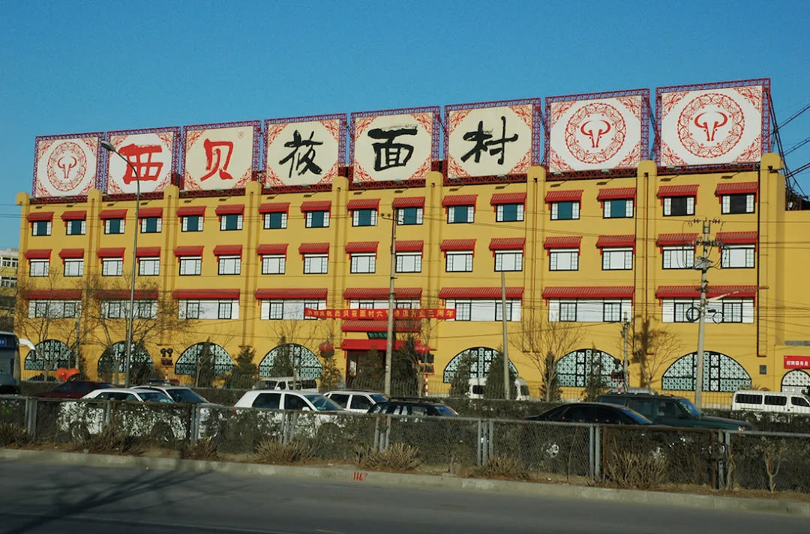
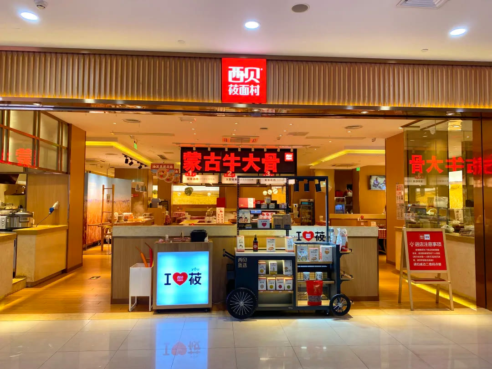
超级符号的本质是嫁接文化原型，人们往往只认识他们已经认识的东西。占领一个文化原型，你就相当于占领了这个文化所代表的所有财富！有人说“ I ❤ 莜”解决了顾客认识“莜”字的问题，确实有这个问题，因为很多人都不认识“莜”，不知道它念 y ó u ，还有人把它念成 xi ǎ o ；也有人说，这个借用“ I LOVE YOU ”这句每天被全世界重复几千万遍的超级话语，让人脱口而出，不胫而走。当然，更直接的说法是，借用“ I ❤ NY ”这个文化原型打造了“ I ❤ 莜”这个拥有强大冲击力的超级符号，创造了全球共享、无与伦比的品牌时尚体验。“ I ❤ 莜”就这样诞生了。
为了进一步降低消费者的“转换”难度，西贝莜面村还在“莜”字的上方，加上了拼音“ y ó u ”。在品牌符号上加上“拼音”，堪称为一种“前无古人”的做法。这种突破常规的做法，以极低的成本普及了“莜”字，破解了“莜”字读音这个营销传播的障碍。当然，它不仅让大家能够看懂了，而且让大家可以“看图说话”，随口一句——“ I love 莜（ y ó u ）”，普及了“莜”字的读音，也推广了中国“莜面文化”，进而让西贝莜面村成为了家喻户晓的餐饮品牌。
超级符号和顾客接触点，就是品牌的元媒体系统重塑品牌的第一步，并不是铺天盖地的打广告，也不是急着找一堆 KOL 和网红做宣传。华与华主张启动元媒体工程、商圈明星工程，打造最强品牌道场。基本功做足，才能对外亮相。
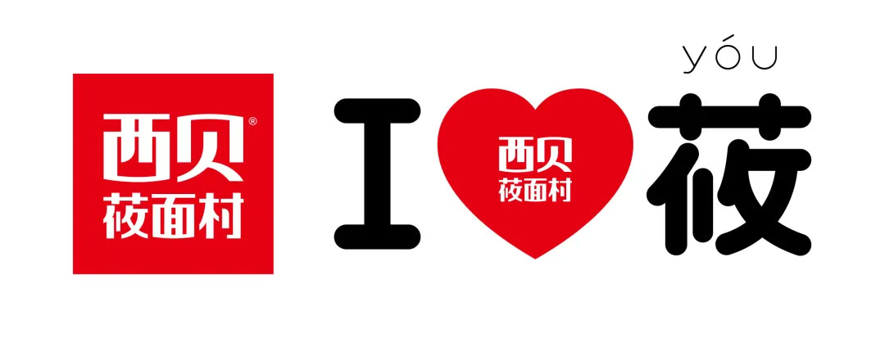
品牌有哪些元媒体呢？这要视行业而定，对于餐饮品牌来说，最大的元媒体就是门店，门店就是品牌的“ CCTV ”。西贝每年要接待 6000 万顾客，进了门店之后，品牌的方方面面都是我们可以“全面媒体化”的元媒体系统。基于这样的思想，我们从 0 到 1 重新开发设计了西贝的店招以及店内菜单、宝贝围兜、湿纸巾、手提袋等一系列元媒体。
电视成为空间预制件，也是西贝气氛组，帮家长叫孩子吃饭带节奏以前的西贝门店只有店外的位置有 2 台电视，启动元媒体工程之后，我们提出门店的电视也是免费的 CCTV ，后来西贝就把电视作为空间的元媒体预制件植入了门店。以顾客入座就能看广告为目标，重新设计了门店电视比例和摆放的位置。
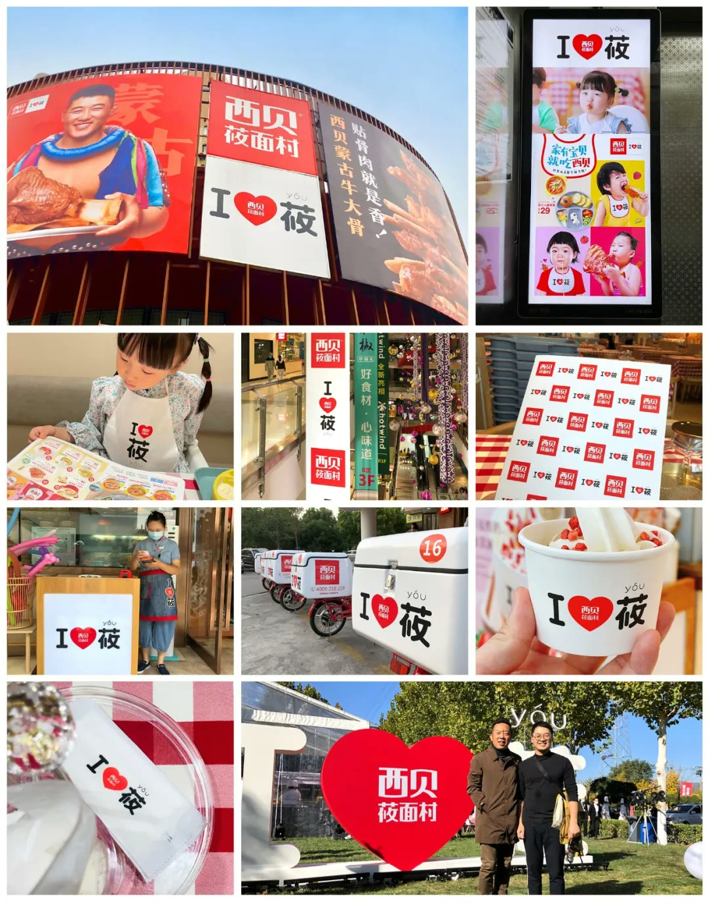
虽然说华与华为西贝创造了很多吸睛的元媒体，但是西贝的红格子桌布，并不是华与华创意的。西贝餐厅里亮眼的红白格桌布是西贝创始人贾国龙先生出国考察时在餐厅里看到的，他发现这个桌布在餐厅里很温馨又亮眼，带给人用餐好心情，就把红白格桌布大胆地引入了西贝。
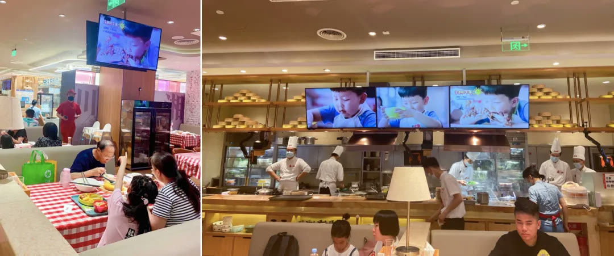
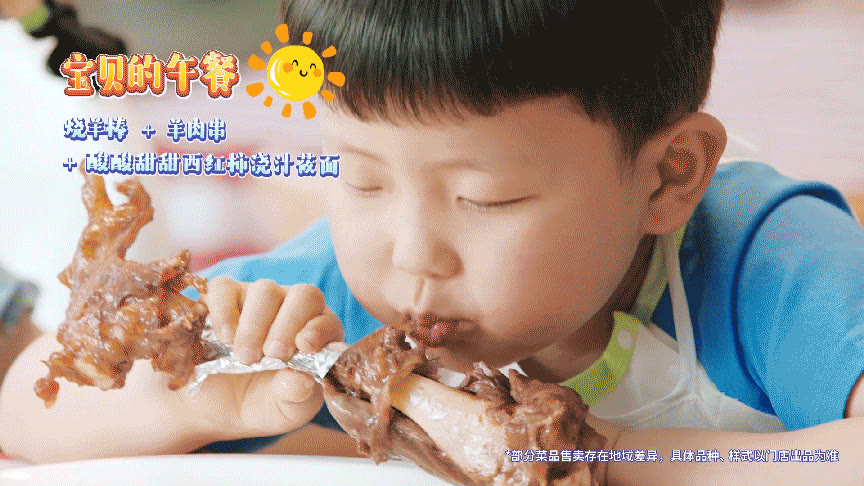
西贝一年 6000 万顾客，每个顾客用餐就要看到红白格；每个顾客在西贝餐桌前拍照，必定会拍到红白格，照片传播后，只要看到红白格桌布就知道是在西贝；甚至于只要看到红白格，大家就能想到西贝，这就是超级花边的超级传播力。
如果爱没有增加，一切都不会改变，“I ❤️ 莜”是超级符号，也是企业文化实力这句来自一线店长的话语，是当时西贝项目组在创作“ I ❤️ 莜”的启发，今年也被重新修订写入西贝蓝图。为什么要加上“如果爱的行动没有增加，一切都不会改变”这句话?因为“爱”不是口号，是行动。如果爱顾客、爱伙伴、爱家人、爱自己的行动没有增加，一切都不会改变。西贝蓝图是用来指引企业内部行动的，“爱”只有与自己的行动链接，把口号转化成一个个具体的行动，才能带来积极的改变:
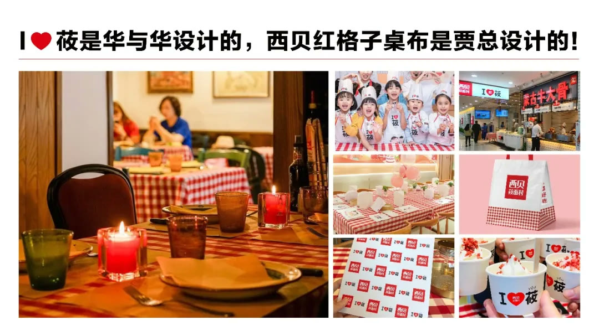
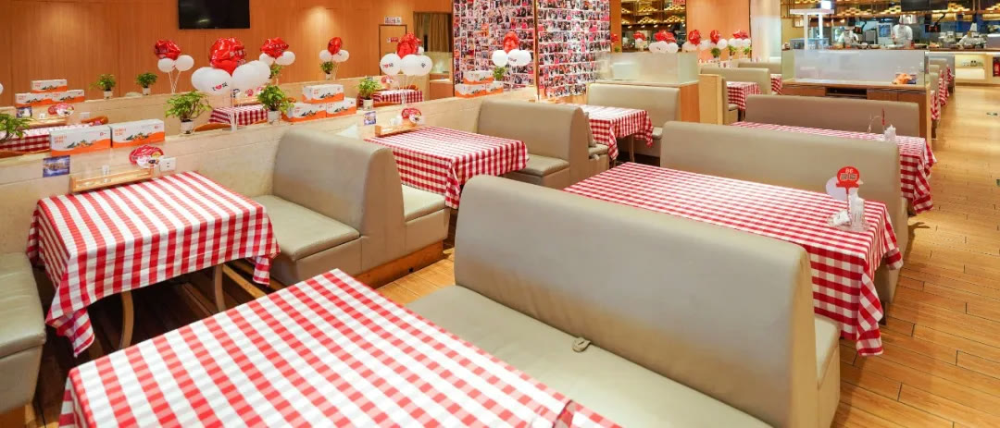
爱顾客，我具体的行动是什么?爱伙伴，我具体的行动是什么?爱家人，我具体的行动是什么?爱自己，我具体的行动是什么?
对于西贝来说，只要爱的行动持续不断，西贝的事业就会生生不息！一个充满爱的行动的人，也是最有力量的人！因为西贝是这样以“爱”的企业文化为核心价值观的企业，浓缩为“ I ❤️ 莜”，就爆发出巨大的超级符号的力量。
决断才是生产力，所有的胜利都是企业家的胜利华与华第一次提案后，贾总评价：“华与华的提案和盘托出，今天的第一次提案就值一千万”！华板说：“所有的事都是一件事，一次做对，一次做全，我们的盘子深不见底，希望能够为您终身服务！”贾总：“华与华这个 I LOVE 莜的创意，太精彩了！一下子去掉了以前西贝的土腥味。”华板：“是你的决断精彩！换一个人，换成其他老板可能会觉得' I ❤ 莜' 做个服装品牌还行，放在餐饮品牌不太合适吧？再改来改去，最好的创意就没了！”一个好创意是否能够充分展示它的价值，靠的就是老板排除争议，赋予组织强大的执行力。所以决断才是生产力，所有的胜利都是企业家的胜利。
笨蛋，关键是创意
克林顿赢得 1992 年选举的胜利，最重要原因是他抓住了当时陷入低谷的美国经济，那是共和党政府的软肋。在他的竞选总部墙上贴着这样一句非常著名的标语：“笨蛋，问题是经济!”
西贝也是这样，一开始大家搞那么多，定位这个定位那个，老是在讨论策略问题。但是策略是多选题，是企业家在经营过程中的实践。最后就像踢足球那样，关键是进球。华与华最终创意了“ I ❤️ 莜”，这是解决问题的关键。所以我们说，笨蛋，关键是创意！
2016年，创意亲嘴打折节，把爱的文化寄生到消费者的生活场景中超级符号，不仅要生，还要养。如何养？品牌寄生。超级符号在西贝全国落地之后，如何让大家玩起来，感受到西贝的爱的文化，自动自发地传播？我们的品牌策略由“生”转到“养”，提出了超级符号，品牌寄生。品牌寄生，是什么意思呢？这个理念是华与华的创始人之一华楠先生最早提出的，后来也成为华与华方法里面重要的一个部分。品牌寄生就是嫁接文化，也可以是嫁接生活，把品牌植入消费者的生活，寄生在消费者的生活行为中。如拍照大声喊“田——七——”，就是把田七品牌寄生在照相的行为中；例如，送长辈，黄金酒就是寄生到中国的孝道送礼文化中。
这种方法，能让品牌更加生动深入的参与到人们的日常生活中，在人们生活中扮演一个重要的角色，日积月累，从而形成一种习惯和文化。如何把爱的话语寄生到顾客的使用场景中？——让全中国的人都热烈亲吻起来。通过营销日历，每年一次的 2 · 14 ，驯养消费者说出“ I LOVE 莜”表达“ I LOVE YOU ”。母亲节你要送花、端午节你要吃粽子，苹果发布会你要考虑换机，双 11 你要甩开买…强大的寄生是为人们设置议程。所以我们要打造一个属于“ I ❤ 莜”的盛大仪式。每年 2 月 14 日情人节，一个天生有爱的基因的节日，举办西贝亲嘴打折节。活动主题“亲个嘴 打个折“ I ❤ 莜”。亲嘴怎么亲？当然是吻得越深，折扣越大，带爱的人去西贝！这个活动让大家知道，“ I ❤ 莜”，不仅是品牌符号，更是一个巧妙的表达爱意的话语。
西贝亲嘴打折节，是华与华基于品牌资产观和营销服务观，为西贝从无到有创造的品牌节日，已经成功连续举办 7 届。从华与华为西贝创作的超级符号“ I ❤ 莜”开始，这样一个动作就把具有非常浓厚西北菜历史的餐厅改造成了一个时尚休闲餐厅，变成了一个国际化的时尚品牌，也为西贝这个品牌注入了爱，创造了爱的体验。品牌寄生让超级符号“ I ❤ 莜”寄生在 2 · 14 情人节，寄生在人们的表白场景中、放大爱的体验，这也就是为什么我们要创造亲嘴打折节。2016 年：第一届西贝亲嘴打折节，一开始就火爆了。
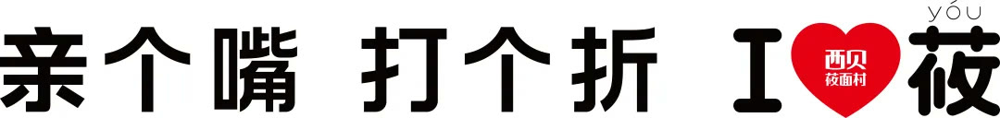
2017 年：西贝董事长贾国龙说：“艾玛！平时是吃饭排队，今天是亲嘴排队！”
2018 年：第 3 届亲嘴打折节，营销不是为了“爆”，而是诚意正心服务好顾客。
西贝提出，今年情人节和春节假期重合， 2 月 14 日在放假期间，北上广都是空城，这个活动肯定没人来，要不要把亲嘴打折节改到七夕或者 5 · 20 ？我们并没有同意这个想法。回到原点思考，从超级符号“ I ❤ 莜”，到情人节提出“亲个嘴，打个折。“ I ❤莜”，就是一个简单的想法，我们并不以举办一场轰动的活动、让人排队为目的。如果情人节刚好跟春节遇上，城市冷清，我们就给那冷清中的顾客，注入一点热闹。只有两三桌，就让这两三桌开心一下。我们不排除由于有这个活动，在全城
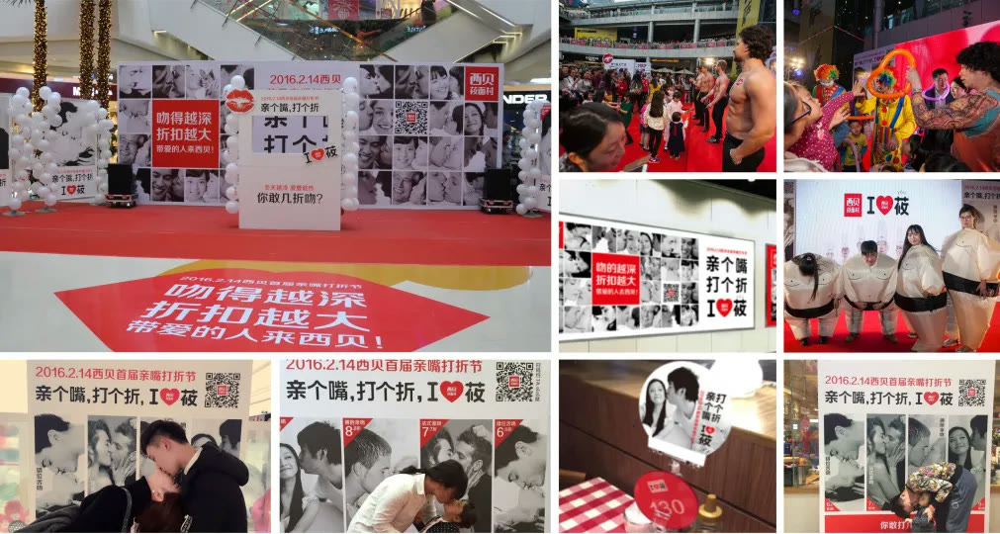
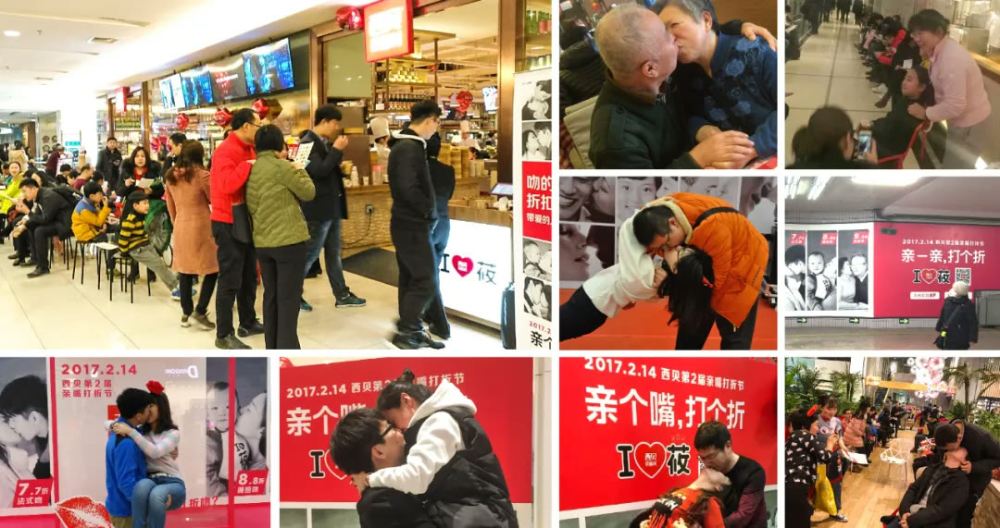
空城的时候，大家都知道到西贝来才有热闹，只有西贝最热闹，那就都到西贝来。实际 2018 年我们的活动更轰动了，更多的顾客到店参与，大家也更热情了。但其实我们事先并不确定，也并不“期必”一定要“制造一个轰动效应”，轰动效应是自己来的。我们就靠正心诚意来经营，靠“闭着眼睛点，道道都好吃”，从菜品、环境，到服务各方面都做好，其他的只是不断给品牌增光添彩。
2019 年：第 4 届亲嘴打折节，行业媒体纷纷报道“经过 4 年，西贝愣是把情人节变成了自己的节日。”
2020 年：第 5 届亲嘴打折节——跨越山海，飞吻传爱。
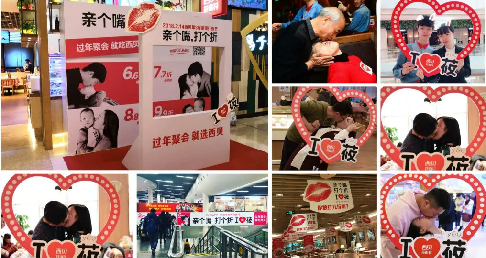
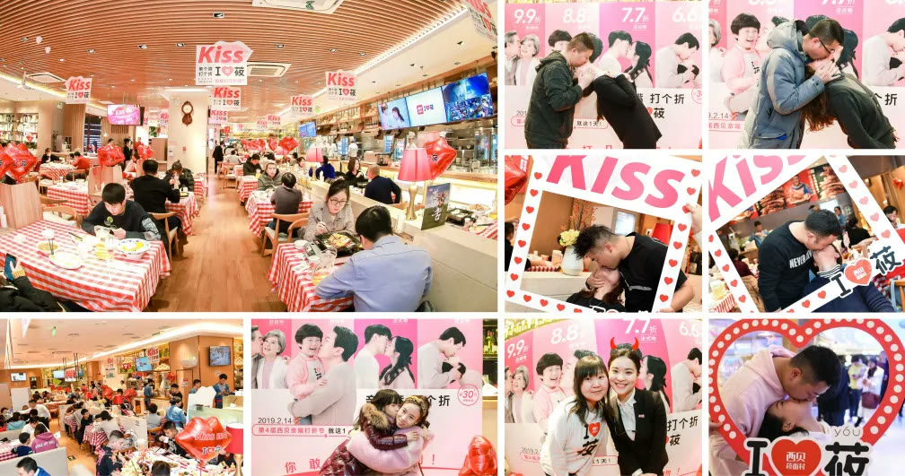
2021 年：第六届亲嘴打折节——新年第一吻，爱的传递由内而外。
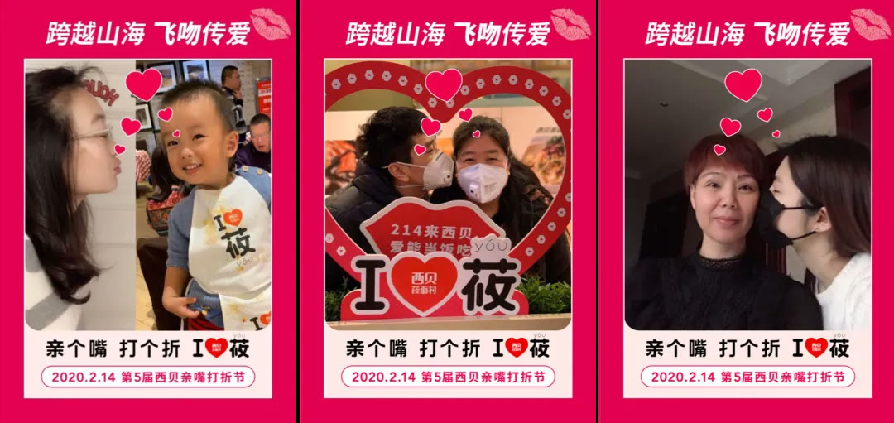
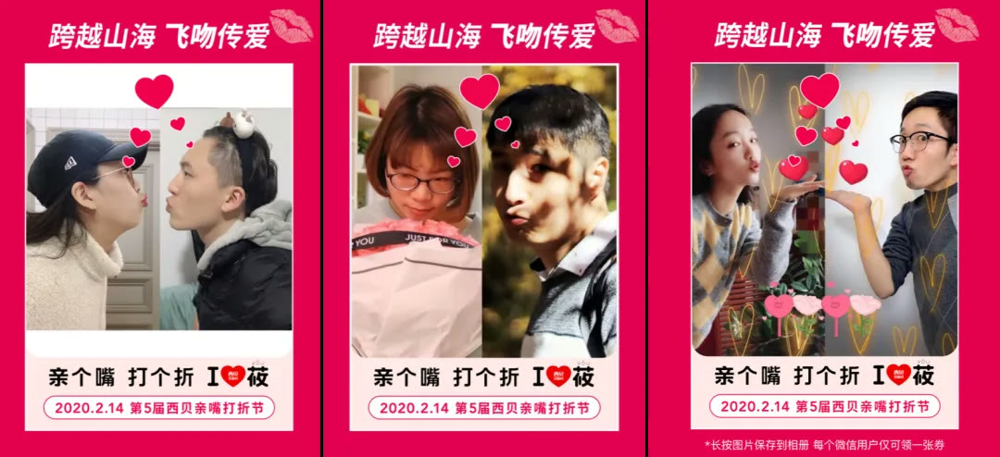
2022 年：第七届亲嘴打折节，已经干了 7 年的营销活动，如何持续改善，创造更热烈有爱的亲嘴氛围呢？我们想到一招“亲 10 秒， 66 折”。亲的时间更长，亲吻的氛围也更加热烈了。
举办了 7 届，在餐饮行业是头牌活动，好多客户来华与华，都点名要创意——给我做一个像西贝那样的亲嘴打折活动。
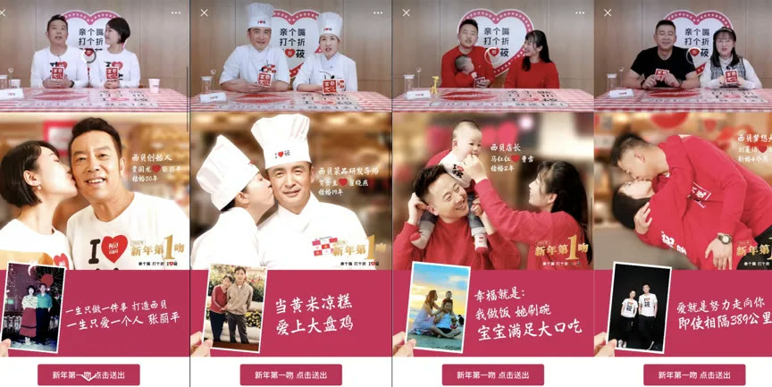
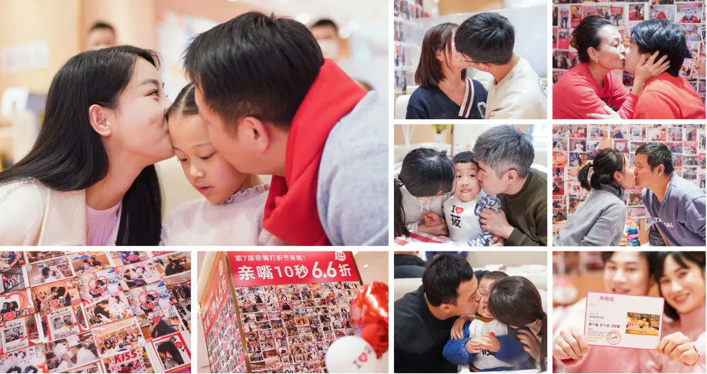
为什么呢？因为餐饮的体验是多元的，不只是产品，体验的价值大于产品的价值，并且创造附加价值。在西贝，顾客们除了喜欢牛羊肉，莜面、儿童餐这些具体的菜品之外，对连续举办了 7 届的亲嘴打折也是记忆深刻。西贝的微信公众号有 1000 万西贝忠实粉丝，在每一年的公众号活动推文的留言里，我们都能看到许多顾客对亲嘴打折节的美好记忆。
“前年去年都参加了，今天还要来。”“见证了白发的父母在西贝的亲吻。”“第一届就参加啦，那时候是两个人，现在准备继续参加，带着 3 岁的娃，娃最喜欢吃的就是西贝了。”“要是每年都留下亲嘴的照片该是多美好的回忆呀。”
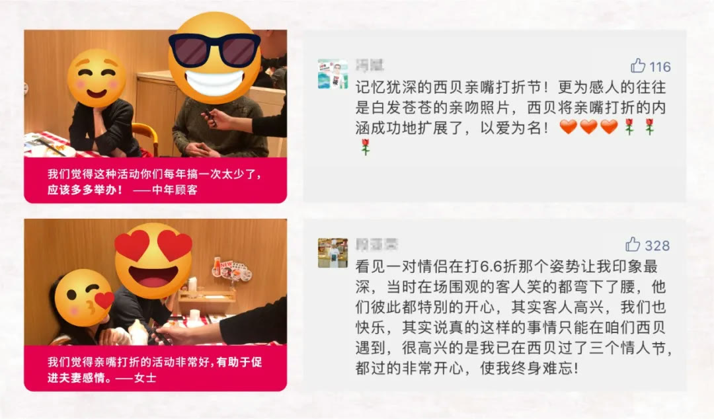
这也是凡事彻底的思想，重复做一件事，就是把平凡的事做彻底，做到不平凡。比如西贝亲嘴打折节， 2014 年第一次做的时候，亲嘴规则是按不同姿势和吻的深度，有不同折扣；到 2022 年做的时候呢，是亲吻时间满 10 秒钟，有服务员在旁边喊 10 、 9 、 8 ……倒计时，统一折扣，气氛更热烈。还有很多细节的创意，都是年复一年的过程中不断生发出来的。
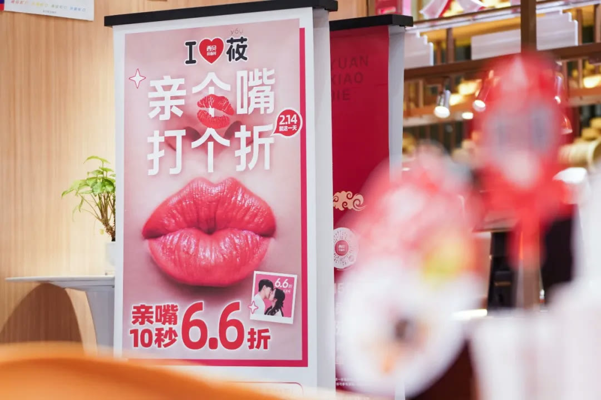
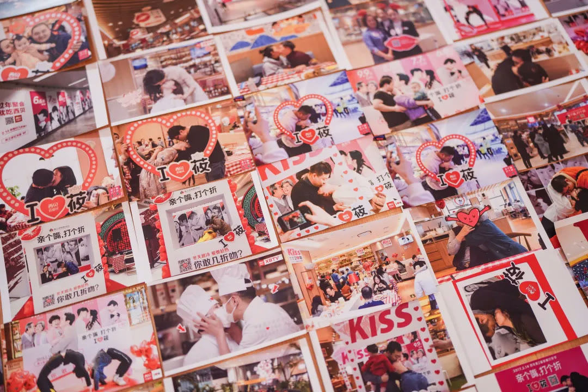
德鲁克说：“人们总是高估了一年所能取得的成绩，而大大低估了三十年、五十年所能取得的成绩。”这句话太深刻了！特别是后一句，人们不懂得积累的原理，不能以三十年为时间长度来安排自己的计划。第七届亲嘴打折节，玩法更简单，顾客参与度也越来越高。只要亲 10 秒，当餐就打 66 折，还能获得一份带有亲吻照片的亲吻证。今年 2 月 14 日当天，西贝全国门店累计亲吻人数达 67278 人，近 60 %的顾客都在西贝亲吻表达爱。
西贝爱顾客和员工，员工爱顾客，顾客爱西贝，这是永远不会变的西贝传递爱的公式。亲嘴打折节也是西贝把品牌超级符号寄生到顾客的日常生活中的超级仪式，是超级符号的最佳体验。超级符号源于文化母体，最终通过一年年地积累成为母体。华与华方法就是耕耘不问收获的方法、坚持就是运气的方法、连续坚持的方法。这可能也是华与华客户中持续时间最长的营销日历了吧。
成果 2
“闭着眼睛点，道道都好吃”成为品牌谚语
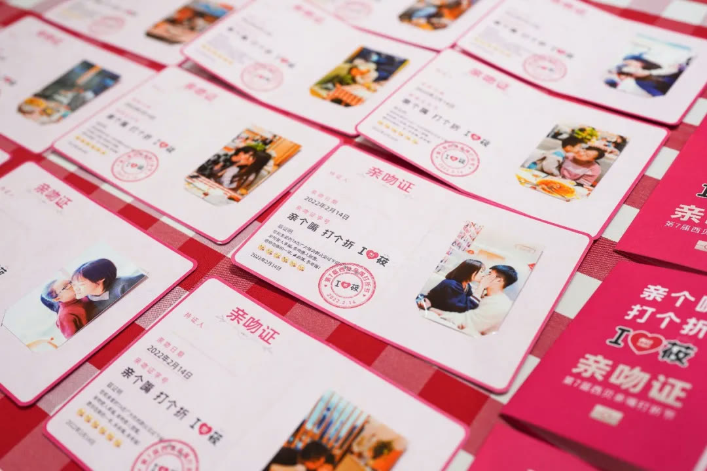
很多客户以为华与华在第一年合作的时候就会给企业重新创造一个品牌谚语，超级口号。但是西贝的品牌谚语并不是第一年就出来的，也不是华与华创作的。当时在第一次与客户开会过程中，贾总提到西贝的目标，说西贝菜品就是要坚持好吃，做好吃，做到“闭着眼睛点，道道都好吃”！华总听到后拍案而起，说这句话好！然后这句话就成了西贝的品牌谚语。咨询的价值在过程中，甚至企业的宝藏就是企业家随口说出的一句话里，但是不知道价值的人听过就过了，而华与华知道，那就是闪闪发亮的金子！
口号不是口号，是一整套经营的逻辑和方略，特别是企业自己的行动。当我们喊出一个口号，不仅是因为我们认为这个口号有传播效率和打动力，而是与顾客立约，承诺我们会像我们的口号那样工作。改变口号，就是改变行动纲领，不是营销传播问题，是价值问题。要落实“闭着眼睛点，道道都好吃。就先就得把菜品减少，多了不好控制。那还是做不到，再加一个承诺：“不好吃不要钱！”为此，西贝专门设立“红冰箱制度”，顾客说不好吃的马上免单放进红冰箱研究反思，这才敢把口号喊出去。
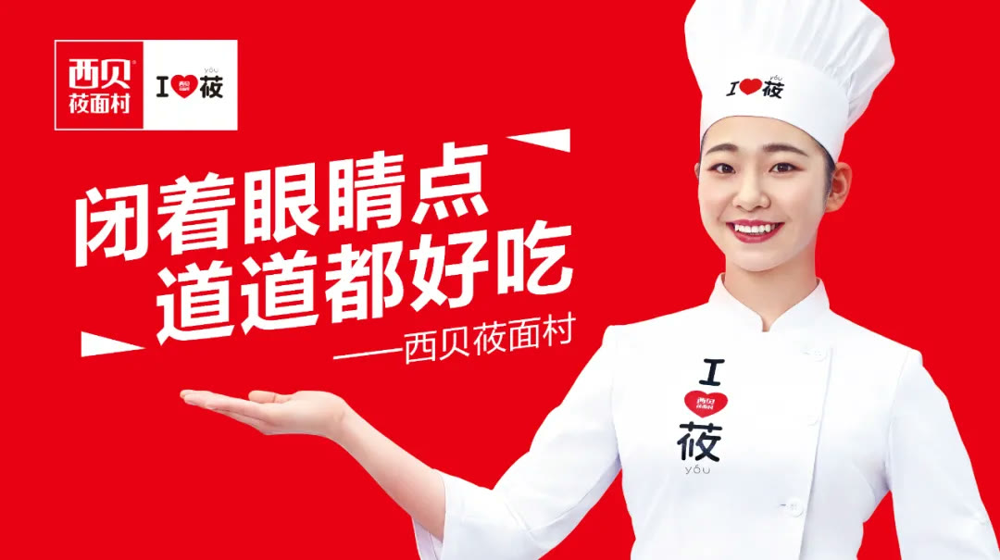
▲ 2015 年时候，西贝门店都有这样的红冰箱，华与华为红冰箱制度写了口号，叫做“消灭不良品，道道都好吃”。
海德格尔说的就是语言不仅说事，而且做事。我们的口号，就是行动，要像我们的口号那样去生活。那么“闭着眼睛点，道道都好吃”背 后有哪些事情呢—— 3 大管理抓手，创造顾客惊喜体验。1 ）产品结构的变化，从 100 道菜砍到 33 道菜，保证道道都好吃。2 ）品牌承诺就是和消费者立约，如果违约怎么办呢？
华与华方法品牌三大原理——社会监督原理：当品牌违约的时候，消费者有权处罚；那么这个时候品牌主动加大对自己的处罚，主动加大对这些处罚就是不好吃不要钱，还有研究退菜品质的红冰箱制度。3 ）退菜这个事情是管理的博弈，如果总部愿意退，下面不愿意退怎么办？
我们在品牌管理中发现很多上传无法下达的规定。所以矫枉必须过正。西贝就设计了一个退菜率 1 %的硬指标。一旦顾客提出对菜品的意见，可能服务员都等不到顾客说退菜，直接就把菜给端走了，这样积极的退菜态度在大众点评上成为顾客常常写到的惊喜体验。来自大众点评的消费者口语报道：“快结账时，我随口说了句羊排有点老，服务员就爽气的退！搞得我们一桌一脸懵逼！ 😳 服务也太好了吧。”“服务员看到我们没吃的菜一个劲儿要退掉，其实我们只是吃饱了而已，下次还要去！”“服务挺好的，很主动，结账看我剩菜很多问原因，我说菜心煮过了，不是我要的味道，服务员马上说那我帮您退掉吧！我本来还想说说烤羊排，也就此打住，生怕被误会是想退菜”…
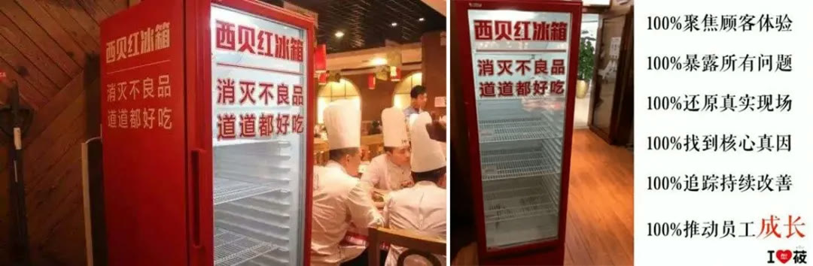
成果 3
走进联合国，一举奠定品牌位势
西贝莜面村，走进联合国一举奠定品牌位势抓住传播机会，放大传播机会2013 年，西贝莜面村被选为年度中华美食代表，走进联合国，向各国媒体与包括联合国秘书长在内的高层，进行为期 5 天的表演与宣传。西贝莜面村走进联合国，完成“ I ❤ 莜”的第一次全面亮相。
有影响力的品牌大事件通常不是造出来的，而是本身具有大事件的势能。有了这样的势能，我们抓住并放大这个传播机会，邀请《纽约时报》、《华盛顿邮报》、《人民网》、新浪、搜狐等国内外多家主流媒体报道了此次活动，这是西贝在国际平台上的一次亮相，也是完成品牌升级后的第一次品牌符号高调亮相。通过本次传播，西贝首次开始在商圈投放广告，整体建立了品牌传播的标准件。
成果 4
复盘舌尖系列传播的成功与失败
不讲失败的案例都是耍流氓舌尖 1 - 2 火了，舌尖 3 哑了2014 年，借势《舌尖上的中国》引发的民间美食热，西贝先后远赴西北乡村拜师学艺，传承黄老汉的黄馍馍，西贝合作前，黄老汉的黄馍馍，一年卖 1 万个，西贝合作后，黄馍馍一年卖出 1000 万个；传承空心挂面的手艺，以 600 万独家买断包销张爷爷家的手工空心挂面，两个月卖出 1700 万， 1 年卖出一个亿，成为 2014 年最火的一碗面……
企业社会责任是企业的业务而不是义务华与华重新定义了企业社会责任，提出企业社会责任是企业的业务，而不是义务。企业社会责任是说企业不是去捐款，而是通过做好自己的产品，把好产品质量关来服务于社会。商业化是保留传统手工美食生命力的最佳方式，对于商业和传统手艺的合作，有媒体评论：“现在这些民间手艺人他们一个村子都有事做了、能赚钱了。授人以渔。这就是最好的慈善。”随着西贝的全国化扩张，在全国各地的西贝门店，顾客都能吃到好吃的传统美食。“西贝莜面村，走进联合国。”“去西贝，吃舌尖上的黄馍馍。”“去西贝，吃张爷爷手工空心挂面。”......
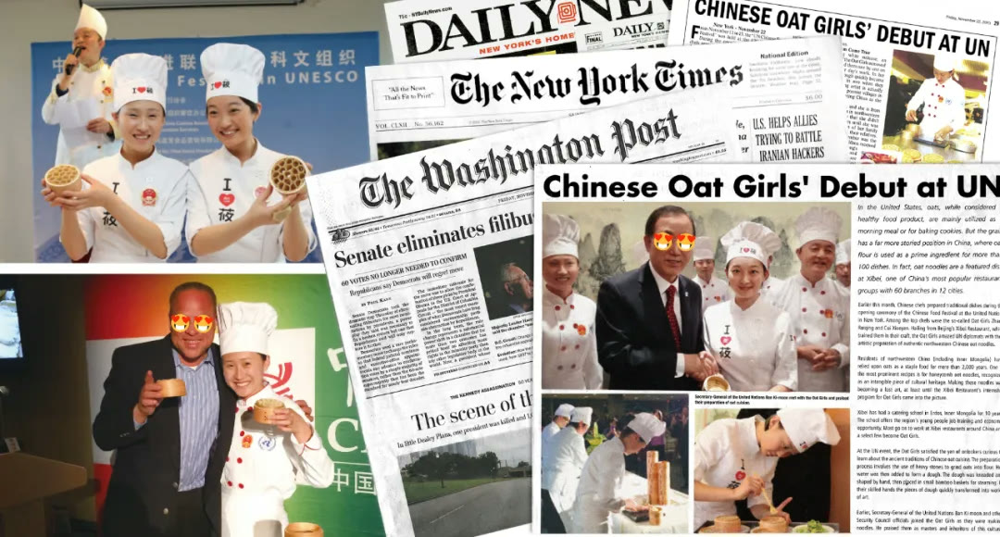
通过一个个的产品，西贝让更多了民间手艺得以延续和传承。经典的产品在西贝一直延续至今，张爷爷挂面、黄馍馍、莜面鱼鱼等美食也成为顾客进店必点。
借势舌尖，连续点了两炮，黄馍馍和张爷爷挂面都火了，成为中国餐饮行业现象级爆品。舌尖 3 上映的时候，西贝和华与华团队又开始摩拳擦掌准备再选一款适合西贝的舌尖爆品出来。那一年大家从大年初一就开始开会，讨论传播工作、研发的工作。大年初四舌尖上映，开始一集集寻宝，找适合西贝的产品，最终锁定了水盆羊肉。团队紧锣密鼓开始创意—提案—拍摄出街的动作，经过 2 个月反复打磨。我们满怀信心的拍摄了极具食欲感的广告片在门店播放；我们提出了比舌尖 1 、 2更具有传播力的产品购买理由：去西贝吃舌尖上的水盆羊肉，汤最值钱，肉算白送，关键是喝汤！
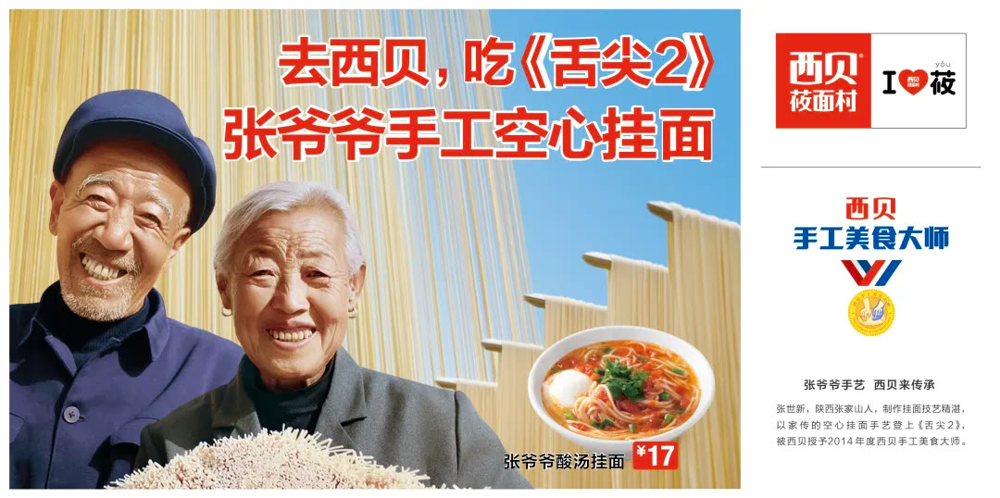
4 月 1 日，水盆羊肉上市之后也在门店正常售卖，但是远不如《舌尖》 1 、 2 产品那么火爆。许多顾客尝鲜之后也开始对产品有质疑，“你这个水盆羊肉，肉实际上只有 1 - 2 片，还叫什么水盆羊肉”。
水盆羊肉是个喝汤的产品， 500 斤肉才熬出一锅汤，售价在 59 元左右的一个汤菜，但是名字却像个肉菜。整体来说，由于水盆羊肉产品本身的产品价格和价值感不对等，最终第三炮就是点不燃。所以营销就是 4P ，产品、价格、渠道、推广的影响缺一不可，同样的渠道，同样的推广，因为产品和定价的问题，没能留在西贝的菜单上。所有的产品，最终都需要经过市场和顾客的检验。
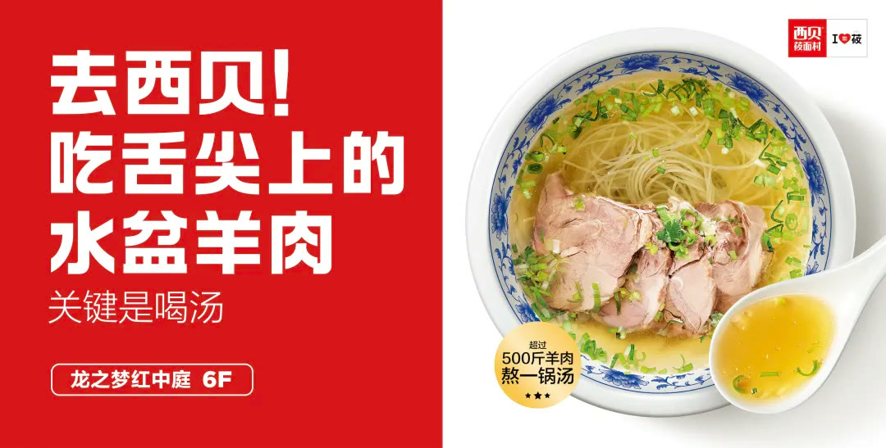
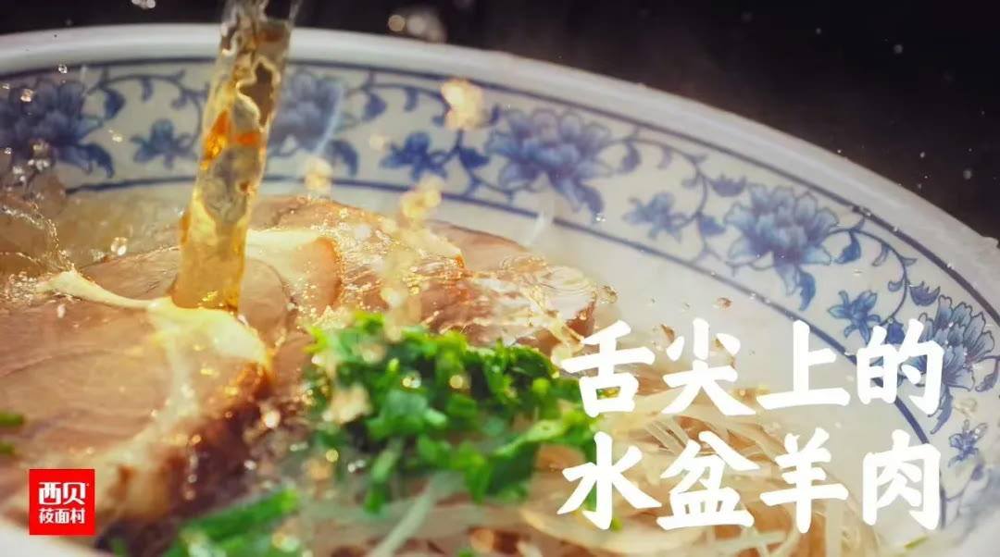
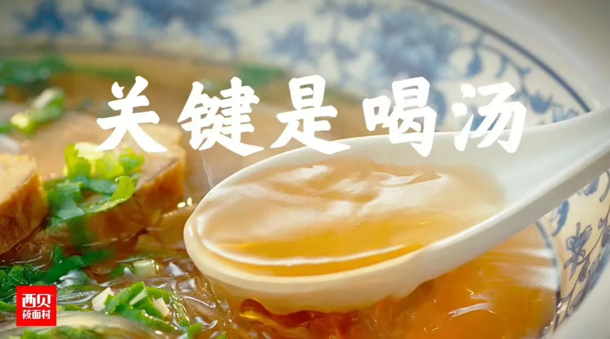
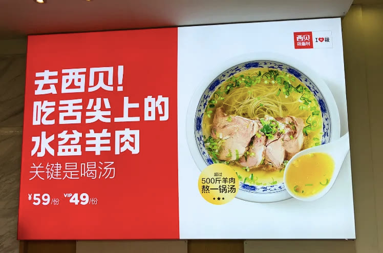
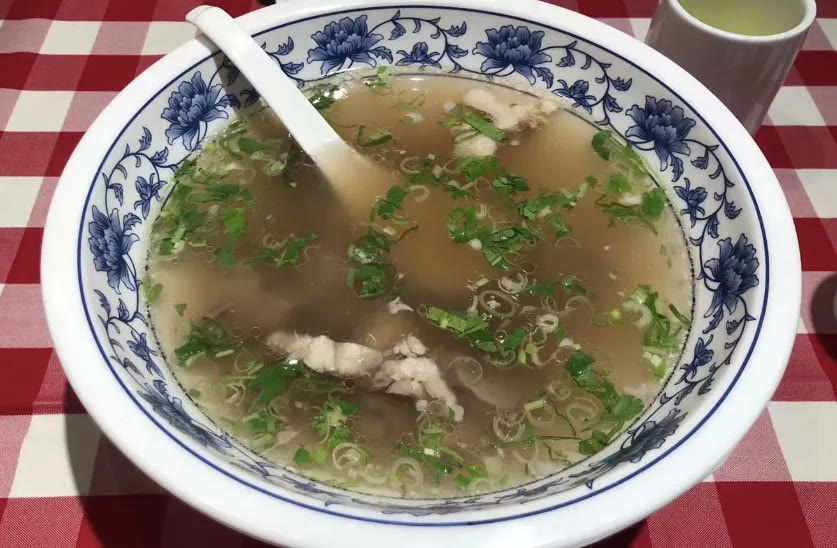
为什么水盆羊肉最终没火呢，也是因为本身《舌尖3》的势能也远不如《舌尖》1、2。观众对产品的兴趣也远不如前了，所以舌尖系列纪录片草草收场，再无续集。由此可见，品牌借势，本身不是一件可持续的事情。要碰运气，但是持久的品牌管理，不能靠运气来。之后，我们和西贝开始探索基于产品主题化传播，开启了营销日历的时代。
成果 5
用营销日历把产品重新生产一遍
产品主题化，主题产品化用营销日历的方法把产品重新生产一遍营销日历是安排品牌一年的行军节奏营销日历是华与华提出来的重要观念，就是把企业的行销活动，不管是公关活动还是促销活动，都固定下来，长期、或者说永远重复做同样的事。西贝的营销日历经过几年的打磨下来，节奏是特别好的。对品牌来说，一年之计在于春。 2 月 14 日，是一年伊始，一次活动，就为全年的营销起势，拉起一个好的势头。之后呢，是 4 月份的香椿莜面上市——吃过香椿，才算春天，和顾客立了一个春天之约。6 月是儿童主题，家有宝贝，就吃西贝； 6 . 1 打响，持续整个暑假。 9 月开始是那达慕草原美食节，秋冬开始吃牛羊肉，年度大菜登场。
这一年的营销节奏就安排的明明白白。这样固定下来，有什么好处呢？有两个好处：降低成本和形成资产。华与华方法的每一句话，都是从成本和投资这两个方面出发。先从投资来说，我们的每一个动作，都是对品牌的长期投资，都是品牌资产的重复和长期积累，如果不能重复，就没有积累，不能形成资产，只做一次的事情，我们就不做。从“ 2 . 14 亲嘴打折节”到春天就去西贝吃香椿莜面， 6 . 1 “家有宝贝就吃西贝”，秋冬“那达慕草原美食节”要去西贝吃牛羊肉，这一个个营销日历已经形成了顾客们的消费者口语报道，形成品牌言说与品牌资产。
每年顾客对这些活动都有期待和美好回忆，活动成为顾客人生的一部分。经过年复一年重复同一套品牌营销活动，内部培训成本也降到最低；对全国近 400 家连锁店来说，每创意一个新活动，培训员工的成本远高于生产一个创意的成本。
▲西贝营销日历
同时，我们也通过营销日历把产品重新生产一遍。为什么是重新生产？因为我们重新设计了产品命名、购买理由、推广道具，让他成为一个固定的信息炸药包，通过符号和词语的重新编码来重新生产产品。
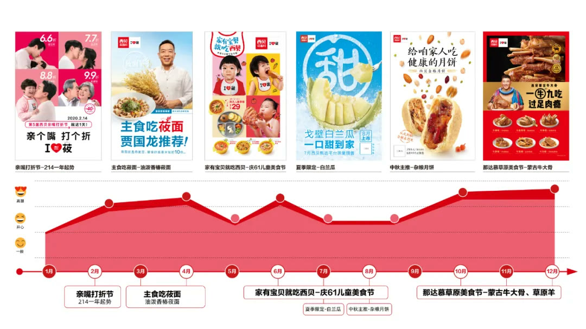
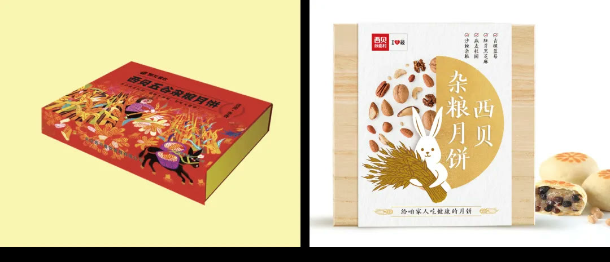
产品主题化，主题资产化，把产品都变成资产固定下来营销日历推的产品，大多是非常成功，过程中当然也有也不理想的。比如有机莜面节，一次性推了多款莜面，最后发现顾客根本不惦记什么有机不有机，顾客就想吃香椿莜面。后面我们就回归到“香椿莜面”的主题推广，毕竟吃过香椿，才算春天。现在香椿莜面依然是莜面中最受顾客欢迎的单品，一年就卖 45 天。
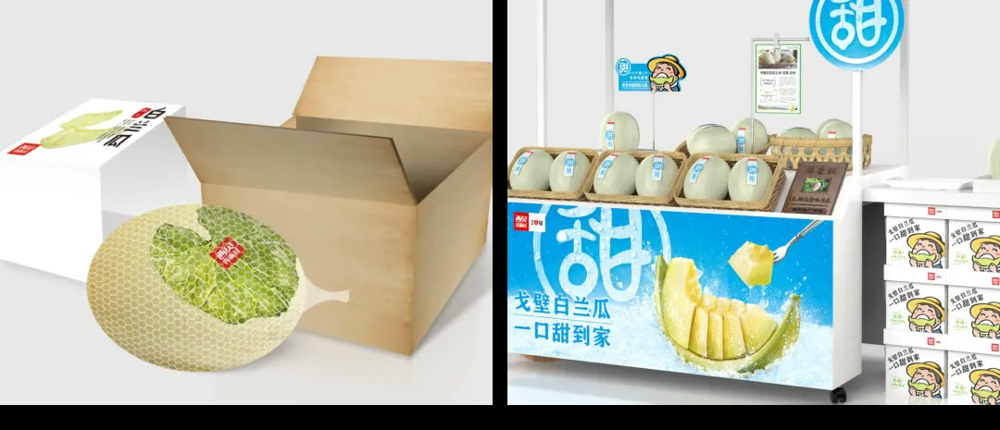
成果 6
关键决策推动蒙古牛大骨诞生
临大事，决大疑，定大计要推莜面还是牛大骨？西贝莜面村不是定位莜面成功的。相反来说，华与华一直认为，不管是西贝西北菜，还是西贝莜面村，招牌菜才是金字招牌。我们要推哪一个产品，取决于这个产品的产品力和叫客力。2018 年，是西贝品牌高速发展时期，有时候每周十几家新店齐开，甚至一天都有8 家门店齐开的节奏，西贝在全国商圈开了 300 多家店，店店生意火爆。
那个时候，贾总也在思考一个重大课题： 3 . 0 的西贝没有头部产品，莜面村里羊肉最香似乎对品牌来说是有点苦恼的一件事。因为贾总有莜面情怀，所以一直希望能够打造一个莜面拳头产品，奈何西贝的牛羊肉太好吃了，太抢戏了，五谷杂粮的健康莜面，在见台率上始终不如牛羊肉。
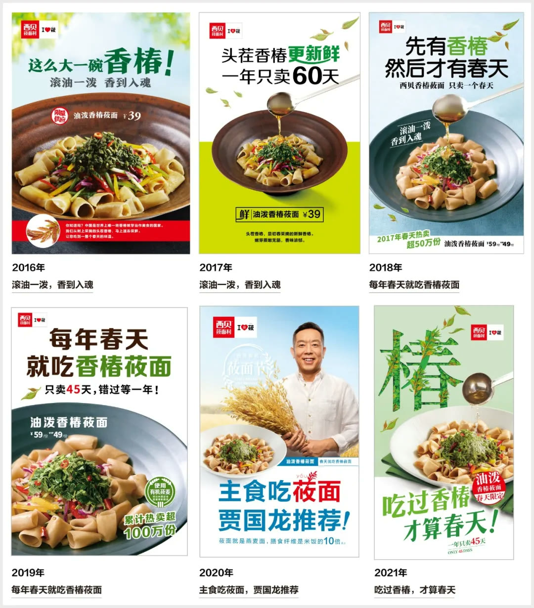
牛大骨原本是西贝菜单上常销的十大招牌菜之一，以前只卖 1 个部位（牛脊骨），只有一种吃法。 2018 年，贾总带领西贝大厨团队研发了全新版本的牛大骨。新版牛大骨源于蒙古的经典吃法，多个部位一起吃，能吃到牛脊骨、牛拐骨、牛棒骨等等，吃筋吃肉吃骨髓，一次吃到 9 部位！
在试菜会后会的总结上，华与华强烈建议一定要打造牛大骨作为招牌菜品。因为我们看到牛大骨这个产品的魅力，绝对能打爆。经过华板和贾总现场一番直抒胸臆的 battle 之后，贾总拍板决定把牛大骨作为主推，压倒性投入，在门店、广告、商圈等等。在企业家的决策中，聚焦是非常重要的。如果你有足够的钱，你什么都可以推，但是资源是有限的、门店的精力也是有限的，顾客的注意力也是有限的。所以，临大事，决大议，定大计！我们从最初的决策点说服贾总，把牛大骨一次干成，一次干好，一次干对。
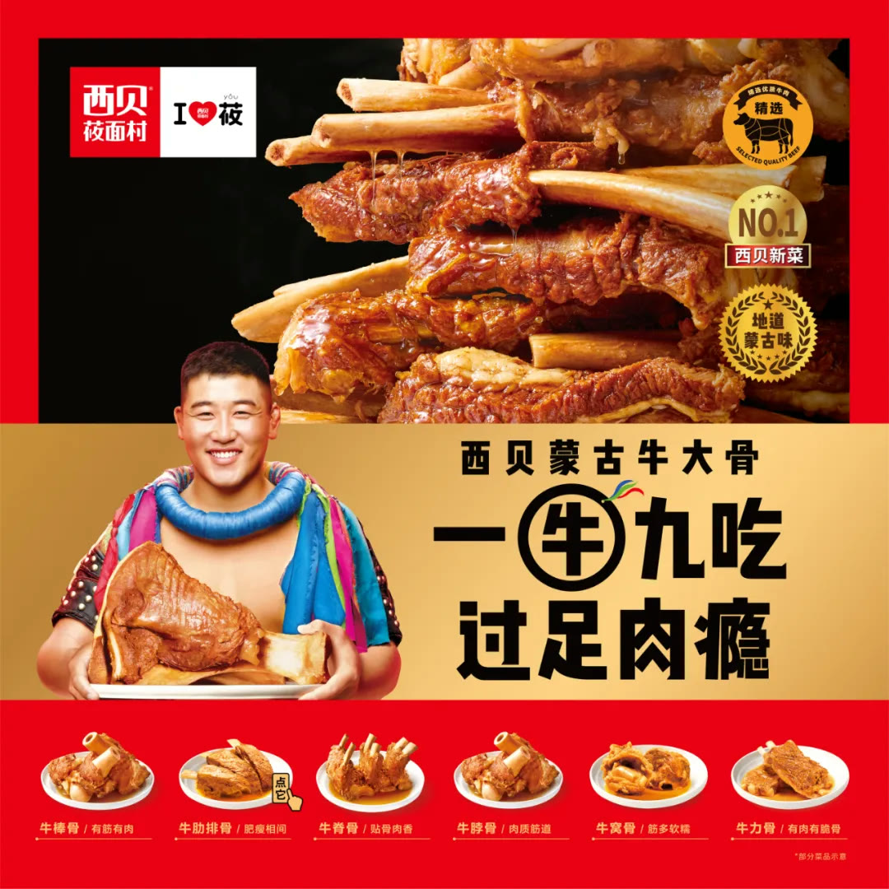
为什么华与华能够果断提出要做牛大骨？我们说修身在正心。所谓修身在正其心者，身有所忿懥，则不得其正；有所恐惧，则不得其正；有所好乐，则不得其正；有所忧患，则不得其正。心不在焉，视而不见，听而不闻，食而不知其味。此谓修身在正其心。——《华杉讲透大学中庸》只有诚意正心，才能格物致知。因为我们是旁观者，对产品本身没有任何偏好。旁观者无所恐惧，无所好乐，无所忧患。我们的角色代表消费者，所以能够做到旁观者清。
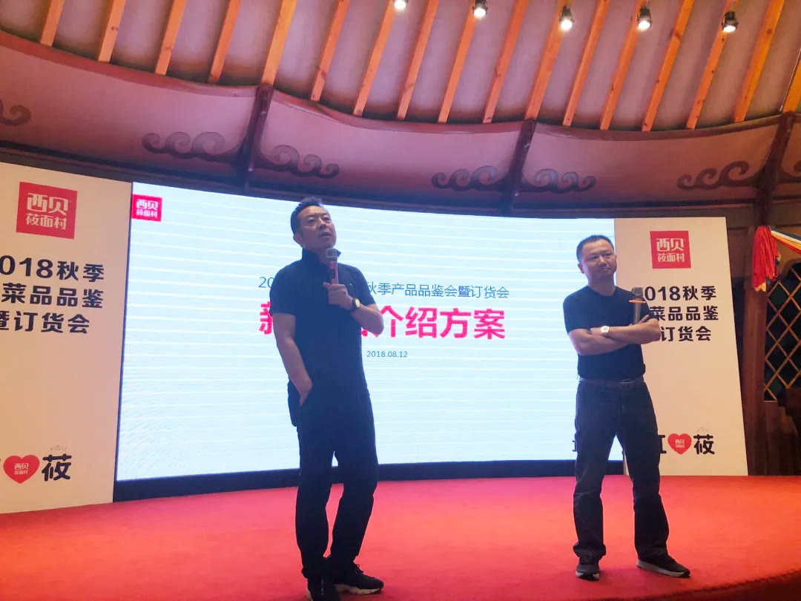
如何从0到1打造销售占比超30%的头部产品？关键动作 1 ：产品即购买理由产品命名即购买理由，我们把“幸福牛大骨”重新命名为“蒙古牛大骨”，建立新品类，一键切换母体。让牛大骨回归到真实的草原母体中，发挥更大的信号能量。巴甫洛夫的刺激反射原理：人类的一切行为都是刺激反射。什么是刺激反射？就是我给他一个刺激，他给我一个行动反射。我说蒙古牛大骨，一牛 9 吃，过足肉瘾，顾客就会对吃肉过足肉瘾有反射。所有的营销动作，我们只研究信号出去，顾客会有什么反射，只有顾客的反射是可以测量的，而且这是我们的最终目的。关键动作 2 ：文化母体，超级符号在传播上，我们用“蒙古”的符号：蒙古搏克手，加上“食欲感”的符号：超级肉山，设计了本次蒙古牛大骨的广告画面。
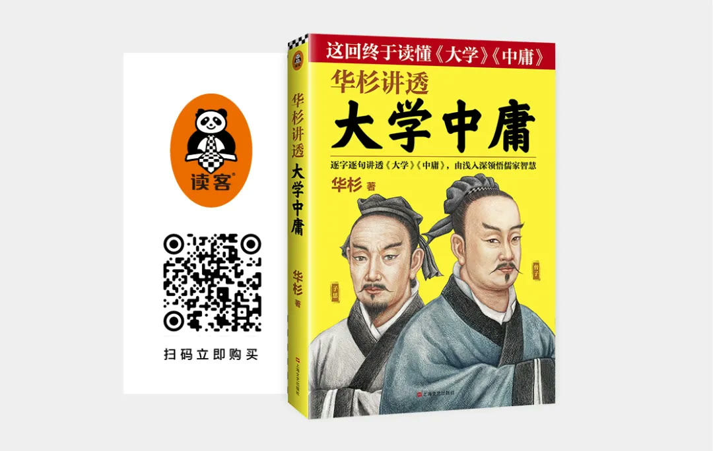
关键动作 3 ：提出店中店策略，设计蒙古牛大骨档口的热卖氛围以前吃牛大骨是在菜单上点，点好了上桌，一人一根自己啃。现在西贝打造了一个全新售卖场景，牛大骨肉卖堆山，肉香十足。刚出锅的牛大骨，热乎乎的，现挑现吃，特别过瘾。 9 个部位任您选，爱吃肉的挑肉多的，爱吃筋挑筋多的，还能有筋有肉搭配好。
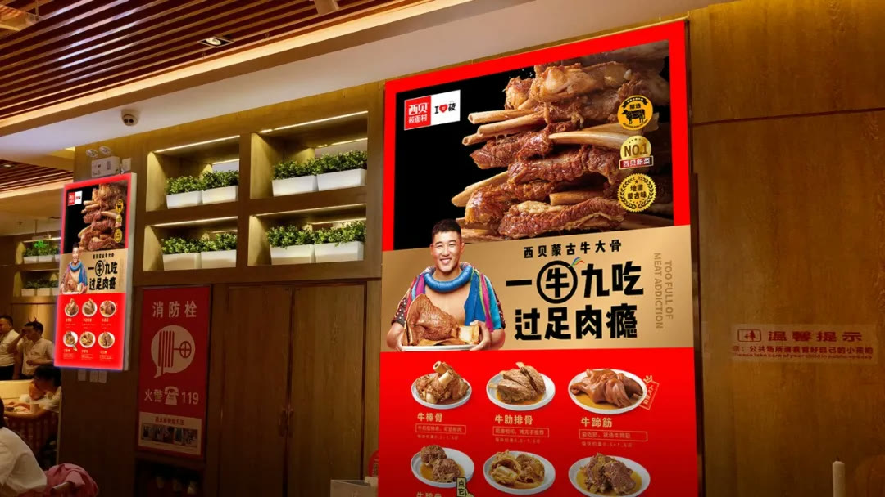
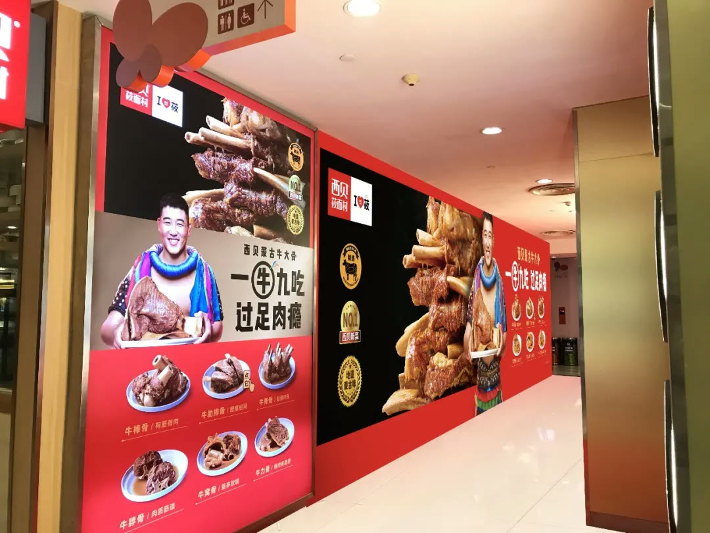
基于这样的产品体验，在门店的人流必经地，我们和西贝团队共同设计了一个“蒙古牛大骨的店中店”的售卖场景。这里就是蒙古牛大骨的主战场，“牛老板”热火朝天推荐，顾客热火朝天挑选。人来人往，吆喝不断。
门店的热卖道场就在这里，最强的销售信号就从这里发射！产品不仅是购买理由，更是使用体验。蒙古牛大骨创造了完全不同以往的现场体验，让这个产品更有魅力了。关键动作 4 ：设计菜单就是设计消费者的选择逻辑，营销日历专题菜单基于门店三现主义的观察，一头牛有 9 个部位，牛脊骨、牛棒骨、牛拐骨、牛肋排骨……对于普通消费者来说可能分都分不清，也就不知道怎么点了。为了解决这个问题，我们在现场蹲点，以客户视角观察发现，大家买肉还真不是按照部位点的，在肉铺前，消费者选择逻辑是“我要肉多的”“我要筋多的”“我要有骨髓的”。
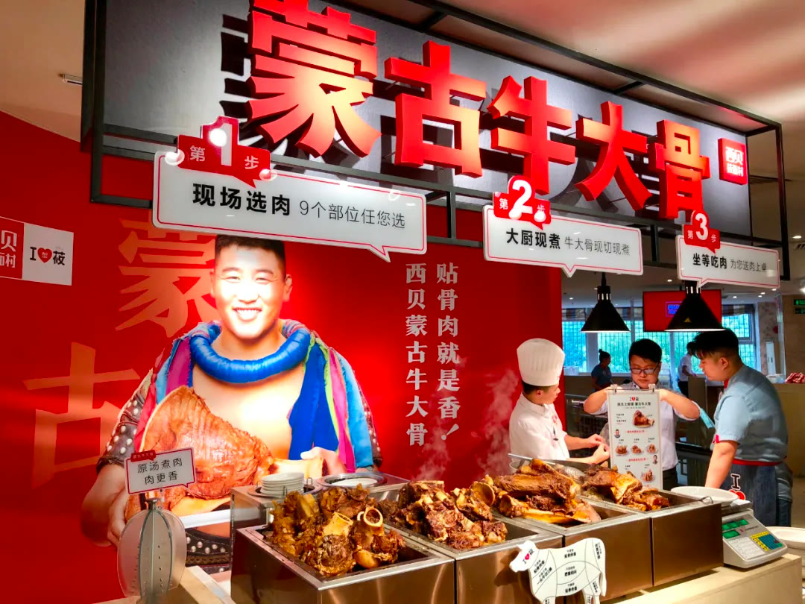
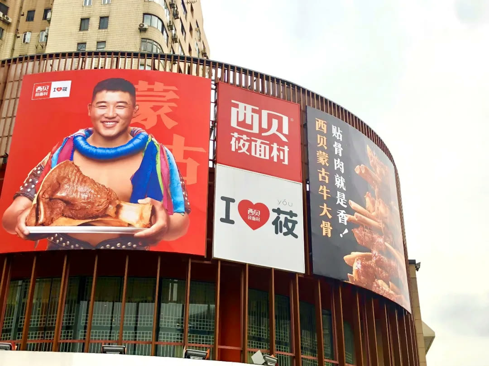
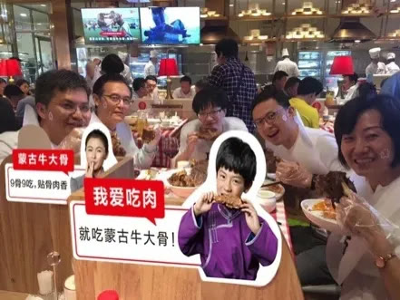
根据这些，我们立即重新设计菜单，把菜单做成了 3 大分类“爱吃肉必点”“爱吃筋必点”“有筋有肉必点”，让顾客一目了然，对号入座，降低消费者选择成本。
同时，我们建立了一个菜单摆放原则：“站立在桌面摆放”。顾客一进店，一眼看到菜单，马上注意到新菜，从商圈到进入餐厅入座，一切动作都是机关算尽。关键动作 5 ：体验大于服务大于产品，那达慕草原美食节为蒙古牛大骨提供独特产品体验
产品：产品就是购买理由。蒙古牛大骨，一牛九吃，过足肉瘾。
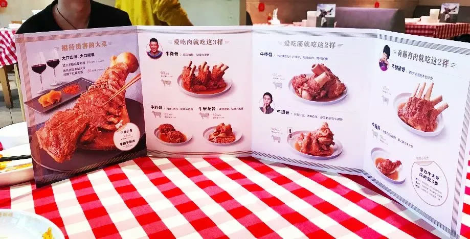
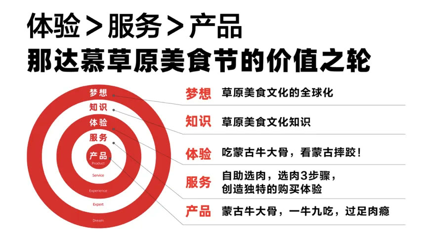
服务：服务创造附加价值。顾客自己在档口选肉，现挑现煮现吃，创造独特的购买体验。体验：为城市顾客创造丰富的草原文化体验。吃蒙古牛大骨，看蒙古摔跤，绝配！在蒙古，摔跤不叫摔跤，而是搏克。起源于公元 12 世纪，由游牧民族在战场上的搏杀技巧演变而来，包含 300 多种投技和摔技。距今已有近两千年历史， 2005 年5 月 20 日，搏克运动正式列入第一批国家级非物质文化遗产名录。通过那达慕草原美食节，我们把看蒙古摔跤，吃蒙古牛大骨！两个动作绑定起来，同时，我们还把原汁原味的蒙古歌舞表演、美食市集等搬到北京，让顾客对蒙古牛大骨，对那达慕草原美食节拥有更加立体的体验。可以说是绝配了。知识的价值：形成消费者对品牌的知识依赖。草原美食文化知识传播，独特的蒙古包草原体验，在蒙古，摔跤不叫摔跤，而是搏克，搏克手、草原奶食文化。梦想：草原美食文化的全球化。企业的生意就是一方人民的生计，通过西贝那达慕草原美食节，挖掘出众多的草原美食：蒙古牛大骨、草原羊肉串、烤羊排、羊蝎子、全羊汤、蒙古奶酪饼、草原酸奶……草原的美食文化、民间娱乐活动那达慕文化、独特的摔跤运动都被带到城市，被全国人民熟知，这也是品牌积德反哺地方文化。
源于母体，成为母体，壮大母体，品牌积德文化母体的 4 个境界：第一重境界：从母体中来（源于草原）；第二重境界：到母体中去（寄生到草原那达慕文化母体）；第三重境界：成为母体的一部分（西贝那达慕草原美食节）；第四重境界：壮大母体（把草原文化和美食扩大化）通过销售创造流行，让母体更强大。每年的那达慕草原美食节，西贝就邀请草原的搏克手比赛，为一二三名颁发现金奖励，还为搏克比赛设计了专属的奖杯，邀请搏克手在城市巡回演出，为蒙古牛大骨代言。
一时间，草原上小众的、独特的搏克活动为全国人民熟知， 2018 年之后很多顾客后来对西贝的印象都是，就是那个憨憨的草原大汉的样子。
从西贝西北菜改回莜面村不是华与华的建议，而是贾总的决定。西贝的文化母体是蒙古，不是西北，有蒙古文化，没有西北文化。西贝是内蒙的企业，贾总是内蒙人，西贝是内蒙美食，所以整个这一波蒙古草原美食主题产品的打造，我们的起手式就是回到母体中吸收原力，所以才有了蒙古牛大骨和那达慕草原节，也正因为回到了母体，我们才能源源不断挖掘出精彩的蒙古草原文化符号。
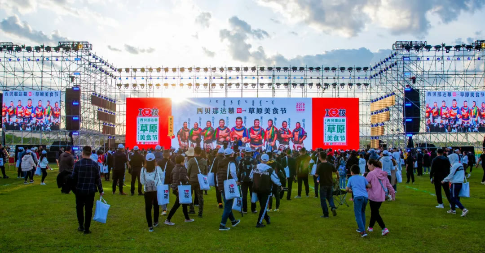
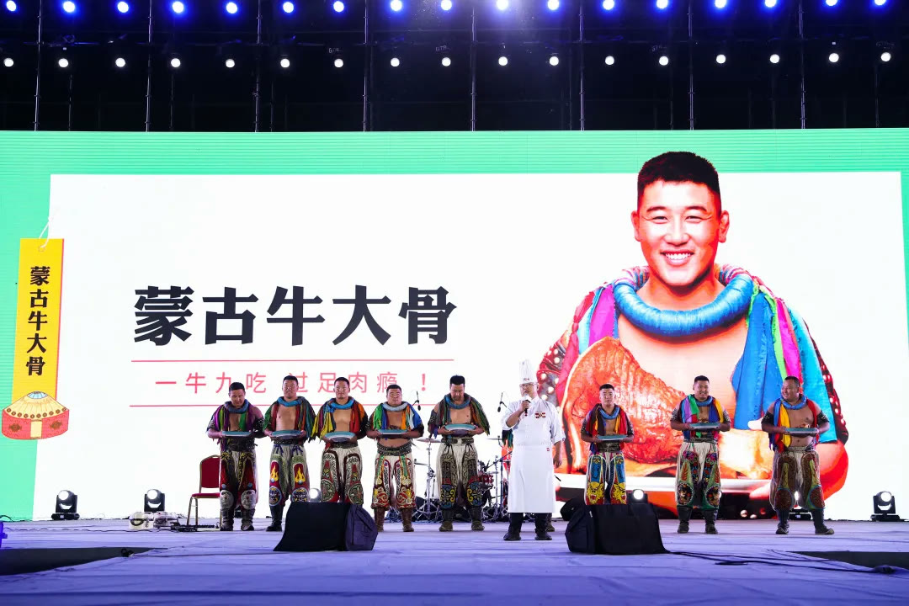
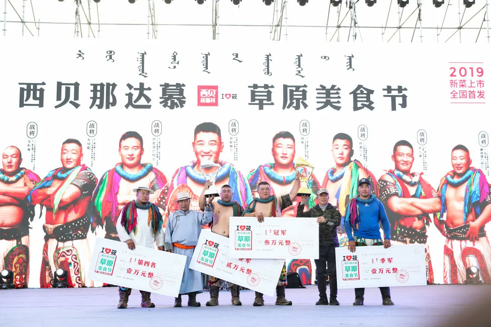
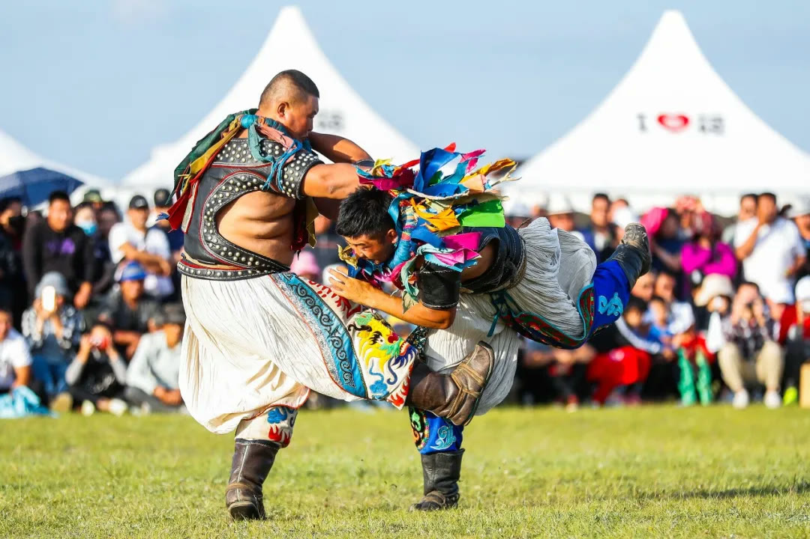
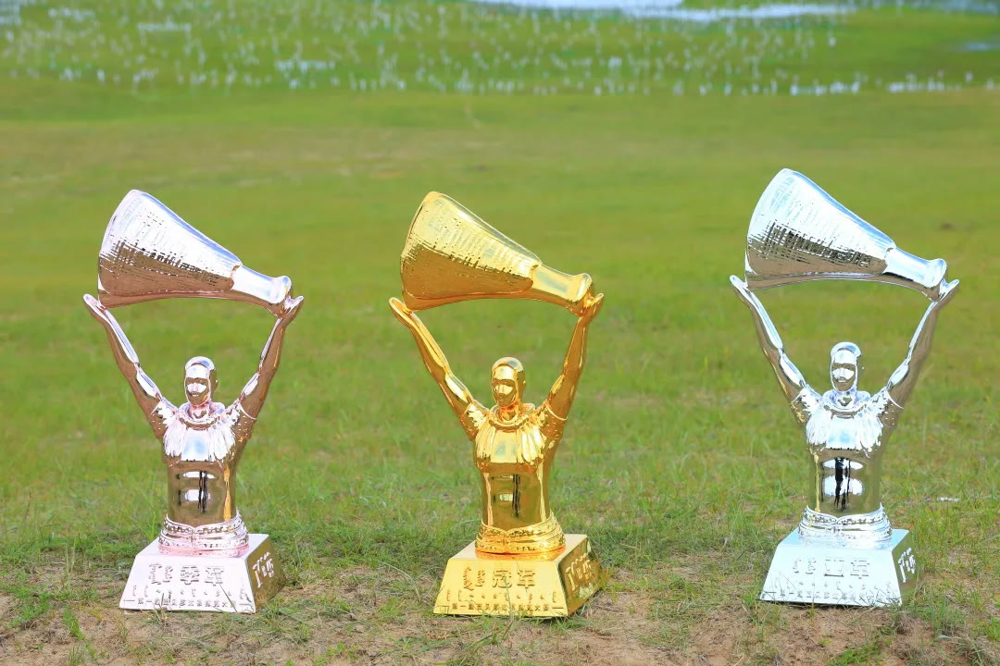
“没有创意，策略等于0；没有手艺，创意等于0；没有执行，一切等于0”整个蒙古牛大骨的产品打造，从 2018 年持续到 2020 年，从草原到门店，贾总带领全员开展超过 10 次以上标准化大会，项目组持续 3 年改善，手把手、肩并肩和西贝团队一起优化蒙古牛大骨，打造销售占比 30 %的第一头部产品。每年秋冬的那达慕草原美食节，就是吃牛羊肉的季节，蒙古牛大骨成为西贝经久不衰的经典拳头产品。从 2018 年上市至今，牛大骨累计销售 1275 万份。相当于全国 1 亿人次家庭都在西贝吃过蒙古牛大骨。
营销日历创造顾客，并且创造品牌言说通过年复一年的营销日历，西贝积累了大量的真实的品牌资产。品牌资产，就是品牌言说。品牌资产是包括品牌名字、标识、产品、包装、店面、广告、促销活动、公关活动、社会活动等等。和品牌有关的一切当中，能被消费者言说，从而给品牌带来购买和传播效益的部分都是品牌资产。所谓的买我产品，传我美名，能创造“美名”的，就是这些消费者口语报道：1 ）西贝莜面村。2 ） I love 莜。3 ）闭着眼睛点，道道都好吃。4 ）蒙古牛大骨、面筋、烤羊排…5 ） 25 分钟上齐一桌菜。6 ）红格子桌布。7 ）每年情人节亲嘴打折。8 ）家有宝贝，就吃西贝。9 ）每年春天有香椿莜面。10 ）每年秋天那达慕草原美食节
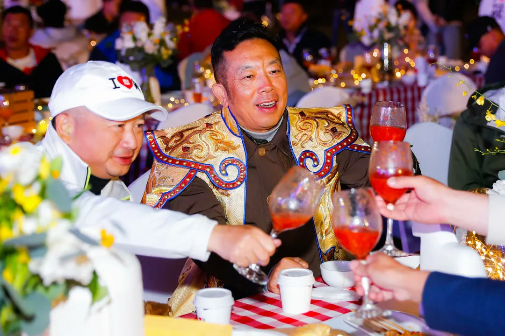
成果 7
重新转动营销 4P
转动 4P ，创新获得利润4P是营销的一切和一切的营销，西贝成功的真因是4P的成功西贝来找华与华之前，第一次定位是西北菜，第二次定位是烹羊专家。如果定位为西北菜，它的推广就是西北的土窑风格，找西北菜的文化母体、品牌寄生、超级符号，它的母体就是西北农村。那么西北菜和烹羊专家，是 4P 里面的哪个 P ？它其实是在讲产品定位。第一次定位，这个很快作为著名案例炒作起来，但是实际上西贝并没有得到什么效益，所以贾总才会做第二次定位。第二次定位烹羊专家，就把产品改了，把不是羊肉的都砍掉，向羊肉集中，集中之后客单价提高了，毛利率降低了，情况很严重，就被叫停了。后来，贾总找到我们说要重新定位，因为感觉前两次定位没有达到预期。那么，要不要重新定位？这时候我们用“华与华课题循环工作法”来思考这个问题。重要的是你要明确课题，还要找到其中真正的原因，因为我们做很多事情时，一出手课题就搞错了。所以西贝的产品到底是什么？西贝的产品，既不是西北菜，也不是烹羊专家，而是整个店。产品是整个店，包括你的菜单、服务等一切都是产品，而不是简单的羊肉或是面条才是产品。一家店成功的真因是产品的成功，从大店到小店，从包房到没包房，从大桌到小桌等，都会被囊括在其中。
营销4P之间相互影响，以渠道为原点带来其他3个P的创新2013 年的时候，我们明确提出，西贝的课题是基于全新渠道的变革，需要重新设计 4P 的问题。
我们要从原来在街边开店，到商圈开店，要根据新渠道就要开发新产品。在 2014年的时候，西贝北京分部的王龙龙总经理在财富广场开了一家 288 平方米的店。当时正常的厨房就要 300 平米， 288 平米的店要怎么开？那只能把厨房改成一个明亮的小厨房了。这么一个小厨房，它也搞不了那么多复杂的菜，原来 100 多道菜肯定没办法制作了，那么就硬改成了 33 道菜，后来就成功了。产品变化一： 3000 平米到 300 平米；产品变化二：有包房到没有包房；产品变化三：大桌到小桌；产品变化四： 130 道菜到 33 道菜；产品变化五：大分量变成小分量。后来问贾总是什么原因定的 33 道，而不是 44 道，是经过什么科学的市场调研得出来的呢？贾总说：“科学个什么，我总要做个决定，我定 44 道也可以，你要问我为什么定了 33 道，我也不知道。”总之做选择的原则是选择能够在中央厨房标准化做出来，然后到门店方便操作能保证好吃的菜，最后选出了 33 道，我们才敢说“闭着眼睛点，道道都好吃”。如果是 133 道不敢说了， 33 道就有把握了，这是一个改变。
产品的第五个变化，是把原来我们北方人的大分量变成了小分量，我们的牛大骨也论根卖了，一个人你就要一根，两个人你要两根，不像原来一下子就上一大盘。这个时候，贾总就提出了“小吃，小喝，小贵”，就是产品变了，价格变了，渠道也变了。所以是因为这个产品开发的成功，才有西贝这几年的扩张，开了 300 家店。小吃小喝从 60 元客单价到 90 元客单价，渠道从街边到 MALL ，赶上了 MALL 的红利。西贝过去是西北菜，母体是西北农村，所以，在这次改变中，西贝的形象一定要去掉西北化。因为所有有风情的东西都是小众的，有人喜欢，也有很多人不喜欢。所以，一定要把它变成大众的、简单的，所以我们做了“ I ❤️ 莜”。营销即 4P ，当你要解决一个营销问题，你手里永远有四张牌可以打，有四个变量可以调节，就是产品、价格、渠道、推广，而且四个变量之间会相互影响。营销是实践，是在尝试中前进，不是一开始全都计划好了去执行，机会和创意是在进行中自然涌现出来的。
2013年-2018年，西贝创新的红利是短暂的，再次进入新一轮的创新时期熊彼特创新理论，讲创新的红利是短暂的，因为竞争对手会迅速模仿学习，创新的优势就没有了，需要再次创新、不断创新。西贝从 2013 年开始，到 2014 年基本成型的创新，红利期有多少呢？观察的结果是到 2018 年，大概连续五年时间。五年之后，从 2018 年开始显现出来，到 2019 年比较明显，这个创新红利消失了，从产品创新来说，除了菜品特色还在之外，“小店、小桌、小吃、小喝、小贵”的模式被广泛模仿，不是特色了。从渠道来说，五年前的新渠道—— shopping mall 越来越多了，单个 shopping mall 内的人流下降，成为餐饮行业面临的共同问题，我们需要重新转动营销 4P ，再次进入新一轮的创新时期。
重新转动营销4P，西贝营销4P再平衡华与华咨询服务工作的两个起点：找对课题，找到真因， 4P 理论是华与华解决营销问题的最高纲领。 4P 就是营销的全部和全部的营销，因为它能够做到完全穷尽，相互独立。
2021 年项目组用 2 个月的时间重新走访一线和访谈高层，对西贝 4P 现状梳理总结并提出新的对策。
产品 1 :菜品精致小份化创新走访门店观察顾客点菜情况发现：西贝菜品菜量大，缺少小分量的菜，西贝特色的菜品致使桌桌都是大菜，偏离“小吃小喝小贵”。西贝桌均人数 2 . 3 人， 2 - 3 个人点菜，点菜多了吃不了，点菜少了吃的不够丰富，尤其是在主食杂粮上，一个西贝大花卷， 3 - 4 个女生分吃也要剩下打包带走。我们提出菜品小份化，哪些菜品有机会小份化？以“大”为特色的菜，不能动，比如牛大骨和大盘鸡等，大就是他们的特色。西贝特色的主食杂粮类和顾客多次反映菜量大的产品，如黄米凉糕和烤羊排，实施小份化、精致化。同时，菜品小份化也是外卖的需求，早在 2018 年外卖刚起步的时候，华与华就提出外卖不是直接把门店的菜搬到线上，而是要为渠道重新开发产品，要做“西贝外卖一人食”。什么意思呢？就是把部分在门店特别大的菜品在外卖平台上要重新开发，变成“一人食”的分量。经过西贝连续几年发力迭代，外卖已经超 10 亿的规模，其中组合套餐类产品（一人食套餐、 40 元以下订单）订单占比最大，是外卖渠道上的主打产品。产品 2 : 固定菜品上新节奏，聚焦牛羊莜持续开发新品产品上的第二个现状是，菜品上新不足，尤其是很多西贝老顾客表示“去西贝不知道吃什么”，我们提出标志性的新菜创新、及时上新季节菜，有价值的老菜翻新，推新菜的目的不是创造更多菜，是创造新顾客和老顾客的新期待。产品 3 :儿童餐及儿童友好服务成为西贝的新资产，要抓住优势，放大优势现在带宝贝去西贝门店吃饭，宝贝就餐服务 3 件套：宝贝围兜、宝宝椅、宝宝餐具和西贝儿童套餐，获得很多宝贝的喜爱！走访门店我们收获了很多“宝贝爱西贝”的故事，一位门店店长分享，他家顾客表示“很多家长这么说，说是我不想吃（西贝），拧不过孩子，他只能来吃，来你家吃啥，那孩子就要吃，我陪他吃。”
价格：定价要分级。特色菜要溢价，普通菜市场价，并强化菜品价值输出。之前网络上有一波西贝价格的讨论，我们内部分析原因，一是来自于西贝对菜品的高标准和高要求，贾总表示：闭着眼睛点，道道都好吃！二是所有菜品定价采用一刀切的成本定价法，成本涨价格就跟着涨，缺乏对菜品价格的精细管理。第一，一切为了好吃，对食材的品质要求“没有上限”，用的都是高标准的原料。就拿西贝手工大馒头来说，使用的是河套雪花粉与河套麦香粉，光面粉的成本就是一般面粉的 4 倍，生产要求复杂，牛奶和面、三次发酵处理、必须手工揉制 38下成型，才能吃到传统馒头的嚼劲和麦香。极致食材和好手艺，是西贝对每一道菜品的要求，无法撼动。但是这些隐藏在背后的价值，缺乏输出。之前在西贝点菜常用的点菜方式：一是折页菜单，二是扫码点单。折页菜单和扫码点餐价值是类快餐化的点菜体验，价值输出受限，门店生意忙碌的时候可以提高点菜效率，但是影响对点菜环节的价值输出的体验。
除了部分西贝铁粉，很多新顾客都不知道西贝菜品好在哪，为什么好吃，只能拿西贝馒头跟普通的发酵粉馒头比价格。第二，所有菜品定价采用一刀切的成本定价法，成本涨价格就跟着涨，缺乏对菜品价格的精细管理。为此我们提出的对策是：特色菜要溢价，牛羊莜等西贝特色菜，接受度高；普通菜市场价，市面上常见的，如炒青菜等，就是市场价；如西贝手工大馒头，重新开发推出小分量的馒头，性价比更高了；同时所有菜品强化价值输出，要把西贝菜好在哪，真真切切、有图有真相的在菜单上展现出来。推广：聚焦儿童餐推广，补强商圈广告。商圈广告是对品牌的投资，也是拦截顾客的重要环节。在实际走访中发现，以前商圈是门店的核心阵地，但是现在还在坚持投放商圈广告、侧重商圈广告的门店已经很少了。我们提出重回商圈广告的策略，在商圈核心位置坚持长期投放，力争商圈第一。
成果 8
以“3 个购买”重新设计菜单
菜单战略： 3 个购买现场提高销售效率通过购买理由，购买指南，购买指令，重新设计了令贾总拍手叫好的iPad 菜单恰逢西贝门店菜单升级为 iPad 电子菜单，除了上面提到的菜品价值输出，还有哪些可改善的点？西贝项目组一起去门店一线找答案，在门店观察、记录，不同门店不同人群对 iPad 点餐使用体验情况。通过采访和行为观察，我们发现：1 、竖屏菜单，顾客在使用 iPad 点餐时左滑右滑使用起来非常不方便，也不知道怎么点；2 、顾客不知道怎么用，是点击还是滑动，交互方式不明显，点击翻页浏览模式非常影响阅读体验；3 、看不到自己点了什么菜多少钱；4 、菜品价值、促销信息等缺乏输出，顾客在使用 iPad 时会多次寻找服务员帮忙点菜。
如何通过菜单的改善，现场就能提高顾客的点餐效率，甚至让顾客一次点更多呢？发现问题，才能解决问题。通过在门店的蹲点观察顾客点菜体验和亲身实践点菜过程，我们绘制出顾客点菜的整体“路线图”，拆解服务员操作动作。点餐环节 9 个动作中，顾客使用阶段，有三次去寻求服务员帮助点餐，我们要做到是让消费者自己浏览菜品，自行下单，尽可能的减少服务员操作，降低顾客选择成本，降低门店沟通成本 。
针对上述发现，我们明确改善目标，提出西贝 iPad 菜单 8 大改善机关！
为什么iPad 菜单如此成功？——菜品拍摄是关键！因为通过对iPad菜单重新梳理，不仅输出了产品价值感，高清电子屏幕也把食欲感最大化了！所有西贝菜品图片的优势也得到最好的呈现。大家可能不知道，菜单是一切运营活动的重心，当年的餐饮行业，几乎没有人会去真正的重视菜品拍摄，华与华认为：货卖一张图。早在 2018 年，我们给西贝请到了日本工匠摄影师和食品造型师（据说造型师祖传三代都是干这个活，专注食品造型 100 年），连续 7 天在西贝北京六里桥地下室完成了上百道菜品的重新拍摄。

成果 9
“家有宝贝，就吃西贝”建设儿童餐资产
“家有宝贝，就吃西贝”终身服务从宝贝抓起华与华品牌五年计划第三阶段：承担企业社会责任，成为社会公民第三个阶段，我们叫做企业社会公民年，这一点其实是最重要的。企业是社会的公器，要为社会解决问题，你要想真正的基业长青，就一定是要扎根于社会。那么，怎么样能让我们的经营融入社会的事业？
这里用到的是华与华企业战略三位一体模型。我们重新定义企业战略：企业战略不是企业的战略，而是企业为了承担某一社会责任，解决某一社会问题，而为社会制定的战略。企业的产品和服务，即组成该社会问题有效的、全面的、可持续的解决方案。
从2015年-2022年，西贝连续7年投入，为中国2亿多儿童做好专业儿童餐在儿童餐和儿童服务上，西贝一直都是先行者！ 2015 年，西贝就开始提供免费儿童餐，可能是国内最早提供免费儿童餐的正餐餐厅。西贝第一个提出为中国 2 亿多儿童做好儿童餐并持续 7 年优化，为宝贝提供一个可以安心吃好饭的选择！西贝为什么这么早就关注儿童餐，并且层层深入、持续不断？是来自于企业家的初心，西贝创始人贾国龙提出：“爱孩子，就给孩子吃更好的儿童餐”，立场鲜明的提出：儿童餐不是大人菜分一半给小孩吃，而是为孩子量身定做菜品。而这个观点的提出，来自于对社会问题的敏锐洞察！
社会问题：儿童食品是底线行业，儿童餐不等于成人餐的一半中国是人口大国，也是儿童人口大国，儿童数量位居世界第二位。儿童食品和儿童药品一样，都是底线行业！ 2017 年的时候，除了洋快餐，市场上的中式正餐餐厅没有真正的儿童餐！那孩子吃到的是什么？都是成人餐的缩小版。在研究中我们发现：中国没有 3 岁以上儿童食品的国标，儿童食品用的是成人标准， 3 岁以下的食品标准聚焦在配方食品和辅食食品。也就是说，所谓的儿童专用食品，比如儿童酱油、儿童牛奶、儿童面条、儿童饼干等，其相关针对性标准，目前基本空白。对于餐厅提供的儿童餐，一般都是成人餐的小份化，多从外观上迎合小朋友，造型多彩可爱，并以送玩具、配置游乐设施等方式迎合家长和小朋友。但在本质上与普通成人餐无异，还在用成人餐的调味方式做儿童餐，这种多盐多油多糖的“营养乱配”，对还在成长发育阶段的小朋友是十分不友好的，甚至可能会影响脏器发育，可以说：抛开糖盐油含量说健康营养，都是耍流氓！
打造专业儿童餐，7大关键动作！关键动作 1 ：建立产品科学， 7 年 4 次产品迭代，“ 1 - 12 岁专业儿童餐”破茧而出
专门为中国 2 亿多儿童研发菜品的可能只有西贝。在儿童餐产品开发上，西贝一直不遗余力，从研发团队配置到食材选择、营养搭配，不断突破自己。从 2017年- 2022 年，历经 4 次迭代：2017 年，第一代“无添加味精”儿童餐 。西贝推出的第一套儿童餐，就考虑到宝贝的健康，提出无添加味精儿童餐。使用了儿童友好的环保稻壳餐具。2020 年，第二代“给孩子吃更好的儿童餐”。第二代儿童餐，同时获得许多年轻女性的青睐，一份主食或套餐，就是一份营养全面的工作餐。2021 年，第三代全新“七彩儿童套餐”。源自【七彩搭配开发法】，选用 7 种不同颜色食材搭配，涵盖主食、杂粮、水果、蔬菜、奶制品等，让宝贝一次可以吃到 7种以上食材营养，整个套餐缤纷色彩，让孩子爱上吃饭！2022 年，是西贝深耕儿童餐的第 7 年，我们提出“西贝 1 - 12 岁专业儿童餐”。以底线思维建立“西贝专业儿童餐产品开发金字塔”，专门为不同年龄段儿童提供更合适的儿童餐选择，坚定不移的为中国 2 亿多儿童做好专业儿童餐！
华与华底线思维：取法乎上，下不保底；取法乎下，上不封顶。很多公司讲核心价值观，就是卓越、创新。但我们是否有一个很明确的标准去判断做到什么程度算卓越，什么程度算创新？当我们把价值观的词搞得很高的时候，其实行为就是下不保底。而在华与华，核心价值观的九个字“不骗人、不贪心、不夸大”是个基准，是底线。用底线思维设置西贝专业儿童餐开发的底线原则：明确底线“轻盐轻糖轻油的三轻原则”；食材选择上，继承西贝禀赋和高标准，“好食材”上不封顶；营养搭配、美味好吃，建立起西贝专业儿童餐产品科学金字塔，产品科学就是西贝对社会问题的独特解决方案，是产品开发的最高纲领。
关键动作 2 ：关键是修辞！“家有宝贝，就吃西贝”生长在小朋友和家长的“消费者口语报道”中的口号。亚里士多德说：“修辞是说服人相信任何东西，以及促使他行动的语言艺术”，也可以理解为：说服人行动的语言艺术，目的在于行动。所以修辞的关键在于要找到一种能够绕开人心理防线的句子。因为我们去打广告、卖东西，消费者天然会对我们产生心理防线，但是有一些语言的艺术形式能够绕开人的心理防线，让消费者自动接受、自动去行动，所以我们把它称为品牌谚语，也叫品牌口号。因此，我们为西贝提出了“家有宝贝，就吃西贝”的创意口号。“家有宝贝”是条件、是刺激，让家长和小朋友对号入座，“就吃西贝”就是反射、是行动指令，目的是用条件反射式的方式将消费者的购买决策成本降到不假思索的低。而且朗朗上口、易记易传播，押韵就创造了一种事实感，让人不假思索，脱口而出，接受指令并行动。这句话放在别的品牌上就不成立，因为没有押韵，没有绕开心理防线。“家有宝贝，就吃西贝”实现指名购买，成功创造大量小朋友和家长的“消费者口语报道”：
关键动作 3 ：超级元媒体，一个围兜就是一个超级广告位， 4 年送出 1388 万条宝贝围兜。超级符号是我们工作的起点，也是我们工作的终点。一切产品价值，都是通过符号来表达的。那我们如何表达并建立“家有宝贝，就吃西贝”的价值呢？西贝一直非常在意顾客的就餐体验，尤其是在儿童体验上，准备了儿童围兜、宝宝椅和宝宝餐具。我们将“家有宝贝，就吃西贝”的品牌资产，寄生在每个宝贝吃饭都会用到的围兜上，创造超级元媒体。2018 - 2021 年，西贝儿童围兜累计送出 1388 , 7318 条，每一次使用宝贝围兜都是对西贝儿童餐超级符号的一次免费传播。
关键动作 4 ：品牌就是恒定价值的稳定输出，隐性价值显性化，倒逼门店标准化。现在越来越多餐厅已经增设儿童餐和儿童服务，可以这么说：儿童餐和儿童服务现在不是有没有的差别，而是质量和品质的差距。西贝在儿童餐和儿童服务上拥有好口碑，已经成为众多家长“带娃出门首选餐厅”。为了盘点西贝在儿童领域的投入，我们做了一张西贝服务体验布局图，从这
张图中可以清晰的看到西贝服务重点投入在哪里，创造出的显性服务价值在哪里。
首先先介绍一下整个布局图，这个图的架构来源于蓝海战略，不要盯着竞争对手，模仿他们只会进入红海竞争。用这样一张战略布局图来检视自己，看清每个动作的投入，在哪些地方兴废增减。最终实现有明确差异化价值的同时，实现了低成本，而不是在所有地方、所有环节出类拔萃。怎么看这张图？1 ）横轴是企业的关键竞争元素，对这次来说，是西贝提供的所有服务动作，这些动作都意味着成本的投入。2 ）纵轴是买方价值，并从低到高的将顾客的体验价值进行显性和隐性的分级。3 ）红色实点是显性价值，判断标准是顾客准确提及的比较多。4 ）提到少的，感受不深的，用空心的点表示。
通过对西贝的服务体验的梳理，我们发现，餐前服务是儿童体验的高峰，赢得了众多家长的好评。但是，消费者在为西贝儿童服务点赞的同时，我们也接收到了很多顾客的吐槽。比如免费餐前小米粥，好评提及率很高，消费者说家里熬不出这个口感，但就是有的门店有，有的门店就没有。
华与华方法：品牌就是恒定价值的稳定输出。为了让隐藏在顾客口碑之间的儿童服务让更多人知道，为了让西贝儿童服务品质从参差不齐到稳定输出，我们提出，一定要把隐性服务显性化，显性服务标准化。针对儿童在外用餐的关键时刻，将存在妈妈口碑间的西贝儿童友好服务显性化，提出儿童友好 7 大服务，并在海报、菜单上广而告之，让更多家长了解西贝提供的优质儿童服务。同时倒逼门店做到 7 大服务的标准化，不断增强西贝儿童服务壁垒。
现在，儿童友好的 7 大服务是门店服务好儿童顾客的最佳抓手，各大区和门店认真执行，收获更多顾客点赞，成为独具西贝特色、让顾客念念不忘、甚至口口相传的服务壁垒。关键动作 5 ：“干饭宝贝”计划，创意引爆市场，一年热销 680 万份。2021 年 6 月西贝七彩儿童套餐上市，新的广告画面一并升级。本次方案的核心创意，紧紧抓住了一个洞察：妈妈最开心的事，就是看到宝贝大口大口吃饭，运用广告创意的 3B 原则（ 3B 原则: Beauty 美女、 Beast 动物、 Baby 婴儿），让三位大口吃饭的可爱宝贝成为主角，吃啥都香的干饭宝贝，这是每一位家长都愿意看到的画面，直接击中家长的心。
关键动作 6 ：上市就是盛事，“庆六一，西贝儿童美食节”， 2022 年再开新局。“家有宝贝，就吃西贝”是我们的品牌承诺，当我们的承诺越完整，社会通过我们解决问题的交易成本就越低。随着“ 1 - 12 岁专业儿童餐”全套产品上市，市场上没有的、家长在家不好操作的儿童就餐问题，都能在西贝解决。借此次新菜上市契机，结合马上迎来的 6 . 1 和暑假，转动词语的魔方，同时占领“儿童”和“美食节”两大母体，为西贝创意打造“庆六一，西贝儿童美食节”营销日历。每年一次，让新品上市成为盛世，更重要的是，专门打造一个属于孩子的美食狂欢节。本次美食节，我们基于文化母体四部曲创作了全球第一本儿童识字菜单，找到儿童识字绘本母体，普通的识字菜单都是教小朋友认识水果、蔬菜、小动物等。所以我们创意全球首本儿童识字菜单，第一次以识字菜单的形式，教小朋友识字点餐，把孩子人生第一次自己点菜留在西贝，让孩子拿着菜单点菜识字。
西贝儿童餐是西贝创造的物质财富，识字菜单是西贝创造的精神财富，拿回家小朋友还说妈妈我要吃西贝，成功地把品牌寄生到消费者的生活场景中。识字菜单也是开创了一个菜单的新品类，可以持续不断地出下去，持续用 100 年。创意一定要有母体，才能发扬光大。商业动机不是要被掩饰，而是要被放大，要与人类的宏大叙事相结合。企业经营一切思考的出发点就是两个目的：一个是顾客的目的，一个是社会的目的。西贝以商业化方式，为中国 2 亿多儿童提供真正的专业儿童餐，真正实现了品牌积德。德鲁克说，企业有且只有两项最基本的职能是：营销和创新。企业的全部工作就是创造顾客，连续 7 年打磨，西贝创造了一批忠实的家庭顾客：1 ）疫情之下，不降反升， 2021 年西贝儿童餐总销售份数是 2019 年的 2 倍，销售额破亿，是 2019 年的 2 倍。2 ） 2021 年儿童客流近 500 万人，带动家庭客流提升 30 %。
3 ） 2022 年第一季度，在上海、深圳、北京市场接连“静止”的情况下，全国儿童餐依然同比增长 98 %。4 ）创造大量消费者口语报道，“家有宝贝，就吃西贝”深入人心。
关键动作 7 ：回归母体，品牌积德，从儿童餐到亲子搓莜面。家有宝贝，就吃西贝，西贝为宝贝提供的不仅是儿童餐，还有风靡全国的受到家长和小朋友欢迎的“亲子搓莜面活动”。从 2016 年开始在全国门店举办亲子莜面体验营，现场教小朋友搓莜面，让小朋友品尝莜面美食，希望他们从小受到莜面文化的熏陶 。仅在 2019 年一年，西贝就举办了 22000 场亲子活动。从 2017 - 2021 年，一共举办了 6 . 5 万场亲子搓莜面活动。
这也是莜面的一个魅力：“它本来就是个手工，很适合小孩爱玩的天性，和小孩爱玩橡皮泥一样，孩子可以凭自己的想象，捏出各种造型。”莜面做到今天受到非常多顾客的喜爱，亲子搓莜面活动可能是很多家庭难得的亲子时光，所有这些都源自西贝贾总作为内蒙人对莜面的情怀。这么多年，一直在执着做好莜面，要做好莜面，有 3 大难点：一难，莜面的工艺难以传承。为此，贾总建立千人莜面妹队伍，企业自己从培训、带教、琢磨手艺，传承三生三熟非物质文化遗产，成为餐饮行业一道靓丽的风景线，不仅把家乡美食带到全国，还带到联合国，莜面妹成为西贝最具骄傲感的一个岗位。二难，莜面品质难以标准化。 2017 年开始自建莜面基地，种植有机莜面，花了 6年时间完成莜面有机升级；投资 6000 万自建工厂，使用瑞士进口布勒设备，做到100 %纯莜面，不掺杂一点白面。三难，莜面难以传播。因为对莜面的热爱，贾总把品牌名改成西贝莜面村。过程中苦于“莜”作为生僻字的传播问题。华与华创造超级符号“ I ❤️ 莜”，一招解决品牌传播难题。
从西贝莜面村，走进联合国，到每年春天就吃香椿莜面。这还不够， 2020 年，西贝莜面全新升级有机，我们提出“主食吃莜面”的行动：主食吃莜面，贾国龙推荐。让贾总亲自为莜面代言，并拍摄了一个简单洗脑的电梯广告：让贾总从画框里跳出来，对着电梯的顾客说“主食吃莜面，莜面就是燕麦面，膳食纤维是米饭的 10倍。”
执着 21 年，莜面偏执狂。截至 2022 年，西贝凭借一己之力带动全国 5 亿顾客认知并爱上莜面。贾总也被任命为“武川莜面推广大使”。为什么西贝这样执着推广莜面？贾总说：“莜面是我记忆中美好的味道，我想将记忆中美好的味道，通过自己开的店，分享给您。”这样的事情，如果西贝不做，如果我们不做，全中国就没有人敢做、会做、能做了吧？
持续管理
从单次项目到品牌五年计划
持续 9 年的品牌管理西贝中国正餐第一咨询是企业家的生活方式，咨询的价值也在于长期陪伴品牌的成长。基于品牌 5 年计划，完成西贝从超级符号、持续改善、营销日历和品牌公民的持续 9 年的品牌管理。但是， 5 年品牌计划并不是按照一个个按顺序那样一步一步前进的，甚至说，有些品牌一上来就是做第 5 年的事情；超级符号、品牌谚语未必是第一年就能挖掘出来，而是第二年，甚至第三年才确定下来。5 年品牌计划，每一年都是第一年。华与华服务西贝 9 年，从 2013 - 2022 ，从 7 亿到 60 亿，经历了品牌黄金十年，见证西贝从地方菜品牌到中式正餐第一。（*数据引自 2021 年度中国餐饮品牌力 100 强）
西贝“品牌五年计划”的时间结构：第 1 年、第 2—3 年、第 4—5 年
品牌五年计划的工作重心
- 超级符号持续改善：超级符号及品牌三角两翼模型
- 营销日历：建立品牌生物钟
- 企业社会责任：持续积累品牌资产